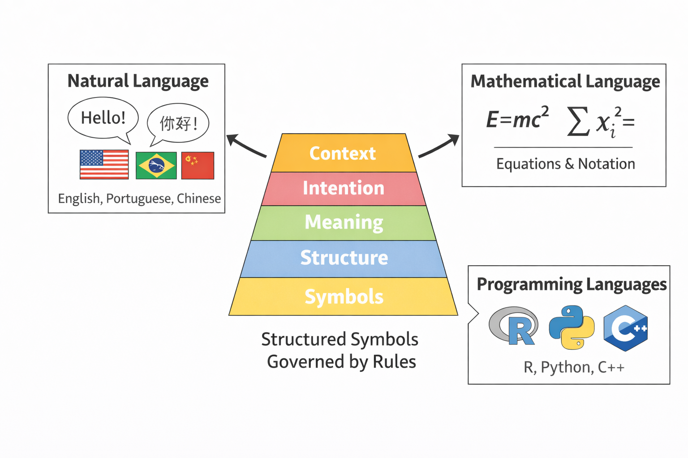
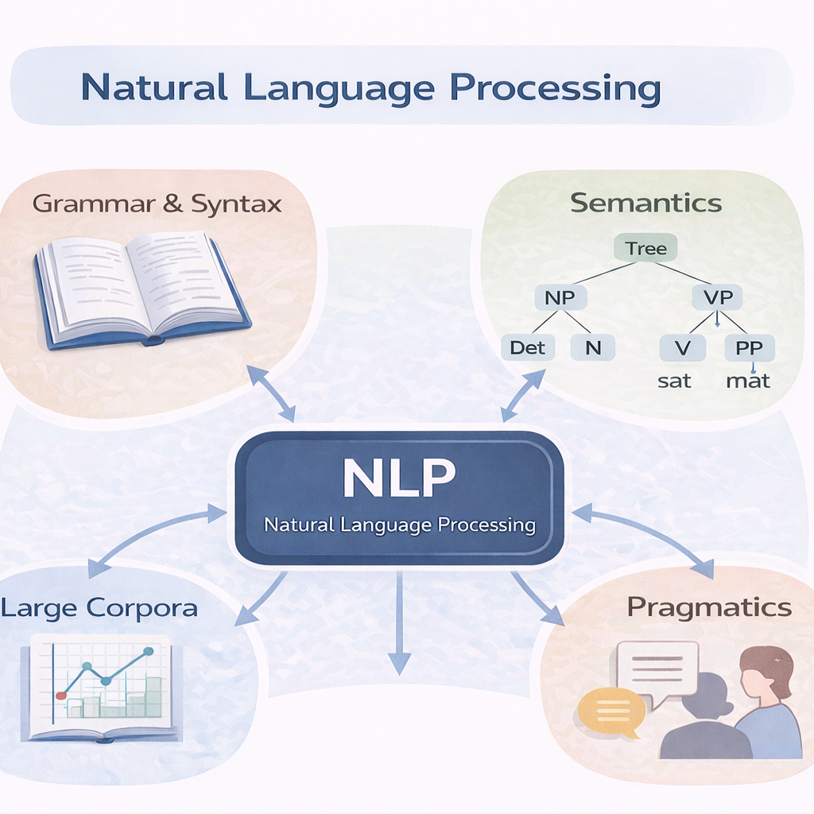
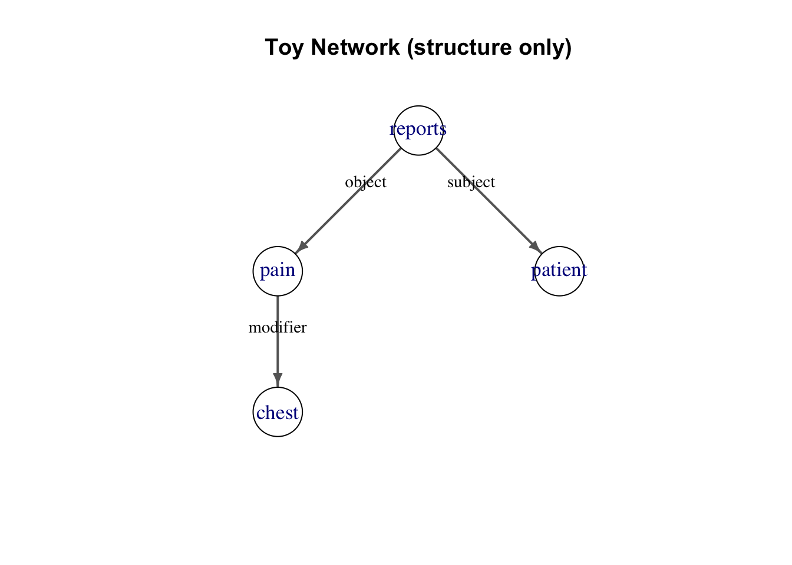
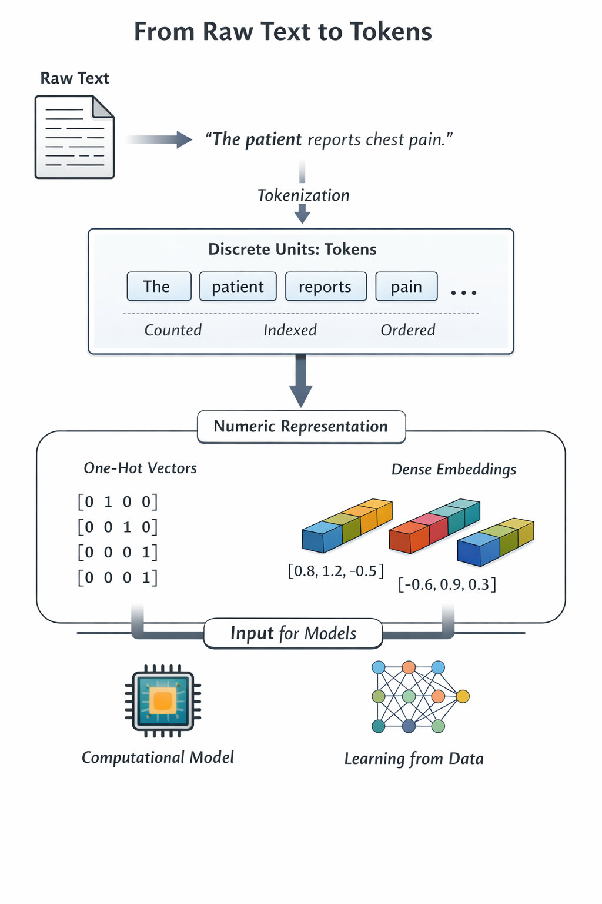

# ------------------------------------------------------------
# Setup: install (if needed) + load packages used in this chapter
# ------------------------------------------------------------
req_pkgs <- c(
"dplyr",
"tibble",
"tidyr",
"stringr",
"tidytext",
"igraph",
"purrr"
)
to_install <- setdiff(req_pkgs, rownames(installed.packages()))
if (length(to_install) > 0) {
install.packages(to_install, repos = "https://cloud.r-project.org")
}
invisible(lapply(req_pkgs, library, character.only = TRUE))10 Gen_AI Foundations I: Language as Computation
10.1 Language and computation
Human beings interact with language long before they formalize it. We intuitively understand that language is layered: it carries symbols, structure, meaning, intention, and context. We speak of natural language (English, Portuguese, Chinese), mathematical language (equations and formal notation), and programming languages (R, Python, C++). Although these systems differ in purpose and structure, they share a central property: they encode information through structured symbols governed by rules.

Computers, however, do not process symbols directly. They process numbers. More precisely, they process binary numbers—sequences of bits (0s and 1s). Every operation performed by a computer ultimately reduces to numerical manipulation in binary form. Text, images, audio, and even entire databases are stored and transformed as numerical patterns in memory.
This leads to a crucial conceptual shift: before a computer can work with language, language must be converted into numbers.
When we interact with computers, text is first represented as strings—ordered sequences of characters. A sentence such as:
“The patient reports pain”
is not stored as meaning. It is stored as a sequence of symbols encoded numerically according to a character encoding standard, typically Unicode (most commonly UTF-8 in modern systems).
Behind the scenes, each character is mapped to an integer code point. That integer is then stored in binary form in memory. For example:
The two outputs above illustrate different layers of numerical representation.
The function utf8ToInt() converts each character in the sentence into its Unicode integer code. For example, the character T is represented by the integer 84, while the space character corresponds to 32. This step shows how textual symbols are mapped to numeric identifiers.
The function intToBits() then reveals how these integers are stored in computer memory. Each integer is represented internally as a sequence of binary digits. For instance, the number 84 corresponds to the binary pattern 01010100.
Conceptually, this demonstrates a fundamental property of computational systems: all textual information is ultimately represented as binary data. However, machine learning models rarely operate directly on these raw bit patterns. Instead, higher-level representations such as tokens, token identifiers, and embeddings are used to structure linguistic information in a form suitable for statistical learning. Those bits are what the computer actually manipulates.
So at the lowest level, language inside a computer is nothing more than structured binary data.
This reveals an important abstraction chain:
Meaning (human level) → Symbols (words, characters) → Integers (Unicode code points) → Binary bits (machine level)
Meaning does not exist inside the machine. It must be constructed through computation over numerical representations. The string representation is therefore the first abstraction layer—human language converted into structured symbolic data, and then into numbers.
The following codes illustrate the ideas previously discussed.
# A simple sentence stored as a string
sentence <- "The patient reports pain"
sentence[1] "The patient reports pain"class(sentence)[1] "character"In R, this object is of type “character”, but internally it is stored as encoded numerical data.
# Split into individual characters
chars <- strsplit(sentence, "")[[1]]
chars [1] "T" "h" "e" " " "p" "a" "t" "i" "e" "n" "t" " " "r" "e" "p" "o" "r" "t" "s"
[20] " " "p" "a" "i" "n"length(chars)[1] 24The sentence is now an ordered sequence of discrete symbols.
# Convert characters to their UTF-8 integer representation
char_codes <- utf8ToInt(sentence)
char_codes [1] 84 104 101 32 112 97 116 105 101 110 116 32 114 101 112 111 114 116 115
[20] 32 112 97 105 110Now we see the numerical layer: each character has become an integer.
# Show binary representation of first few characters
intToBits(char_codes[1]) [1] 00 00 01 00 01 00 01 00 00 00 00 00 00 00 00 00 00 00 00 00 00 00 00 00 00
[26] 00 00 00 00 00 00 00And here we reach the lowest level: binary bits. This is what the hardware ultimately processes.
The two outputs above illustrate different layers of numerical representation. The function utf8ToInt() converts each character in the sentence into its Unicode integer code. For example, the character T is represented by the integer 84, while the space character corresponds to 32. This step shows how textual symbols are mapped to numeric identifiers.
The function intToBits() then reveals how these integers are stored in computer memory. Each integer is represented internally as a sequence of binary digits. For instance, the number 84 corresponds to the binary pattern 01010100.
tibble(
character = str_split(sentence, "")[[1]],
unicode = utf8ToInt(sentence),
binary = sapply(utf8ToInt(sentence), function(x) {
paste(rev(intToBits(x)[1:8]), collapse = "")
})
)# A tibble: 24 × 3
character unicode binary
<chr> <int> <chr>
1 "T" 84 0001000100010000
2 "h" 104 0001010001000000
3 "e" 101 0001010000010001
4 " " 32 0000010000000000
5 "p" 112 0001010100000000
6 "a" 97 0001010000000001
7 "t" 116 0001010100010000
8 "i" 105 0001010001000001
9 "e" 101 0001010000010001
10 "n" 110 0001010001010100
# ℹ 14 more rowsOnce language is stored as structured symbolic sequences, computational operations become possible. We can measure length, search for patterns, extract substrings, compare sequences, and transform characters. The following codes implement examples of such operations:
# String length
nchar(sentence)[1] 24# Detect pattern
grepl("pain", sentence)[1] TRUE# Replace text
gsub("pain", "discomfort", sentence)[1] "The patient reports discomfort"# Extract substring
substr(sentence, 1, 12)[1] "The patient "Importantly, none of these operations require semantic understanding. They operate purely on symbolic structure. The computer is manipulating encoded numerical patterns, not meaning.
# Show position indexing
data.frame(
position = seq_along(chars),
character = chars
) position character
1 1 T
2 2 h
3 3 e
4 4
5 5 p
6 6 a
7 7 t
8 8 i
9 9 e
10 10 n
11 11 t
12 12
13 13 r
14 14 e
15 15 p
16 16 o
17 17 r
18 18 t
19 19 s
20 20
21 21 p
22 22 a
23 23 i
24 24 nIndexing reveals another key property: computation requires ordered, addressable structure. Once language becomes a sequence that can be indexed, it becomes compatible with algorithms. This observation naturally leads to the scientific discipline of Natural Language Processing (NLP). NLP begins with the premise that language can be treated as structured numerical data and transformed into representations that support inference, learning, and prediction.
In other words:
Language → Numbers → Vectors → Probability Distributions → Learning
In the following sections, we move from raw strings to structured linguistic representations, and ultimately to probabilistic models capable of learning patterns from large corpora.
10.2 What is Natural Language Processing?
Natural Language Processing (NLP) is the scientific and engineering discipline concerned with building computational systems that can work with human language. Its goal is to transform language—whether written text or speech—into representations that machines can manipulate, so that tasks such as classification, extraction, retrieval, translation, and generation become possible. In modern practice, NLP treats language as data: it can be measured, modeled, compressed, predicted, and generated. What makes NLP uniquely challenging is that language is not only a sequence of symbols, but also a vehicle for meaning, intent, and social context. As a result, NLP sits at the interface between formal structure (grammar and syntax), meaning (semantics), use in context (pragmatics), and the statistical patterns observed in very large collections of text and speech data—known as large corpora. A corpus is a structured collection of language data used for analysis or model training. Large corpora provide the empirical foundation for modern NLP systems, allowing computational models to estimate statistical regularities of grammar, vocabulary, and usage from real-world language. In contemporary language modeling, such corpora often contain billions of tokens drawn from diverse sources, enabling systems to generalize across domains and contexts. We will see what these terms mean in the following sections. These ideas are summarized in @fig-npl.

The following code illustrates NLP by showing how a computer can scan human language and extract a useful information/signal from it—in this case, whether a sentence mentions “pain.” Even without understanding meaning like a human, simple text processing already enables practical language-based tasks such as screening, filtering, and routing information.
# NLP in one minute: making text actionable (no tokens yet)
# A tiny "corpus" (could be notes, emails, clinical snippets, etc.)
texts <- tibble(
id = 1:4,
text = c(
"The patient reports chest pain and shortness of breath.",
"No pain today. Symptoms improved after treatment.",
"Please schedule a follow-up appointment next week.",
"The trial report mentions adverse events and mild nausea."
)
)
# Task: identify which lines mention pain (simple text-based decision)
results <- texts %>%
mutate(
mentions_pain = str_detect(str_to_lower(text), "\\bpain\\b")
)
results# A tibble: 4 × 3
id text mentions_pain
<int> <chr> <lgl>
1 1 The patient reports chest pain and shortness of breath. TRUE
2 2 No pain today. Symptoms improved after treatment. TRUE
3 3 Please schedule a follow-up appointment next week. FALSE
4 4 The trial report mentions adverse events and mild nausea. FALSE In the following code we demonstrate a simple example on how to create a corpus in R. It begins by defining a small set of sentence templates containing placeholder variables such as {symptom}, {event}, {n}, and {unit}. These placeholders represent interchangeable linguistic elements. Separate vocabulary pools are then defined for each placeholder category—for example, a list of possible symptoms (“pain,” “nausea,” “fatigue”) and time units (“days,” “weeks”).
A helper function generates individual sentences by randomly selecting one template and replacing each placeholder with a randomly sampled value from its corresponding vocabulary pool. In this way, each generated sentence follows a coherent grammatical structure while varying in content. Repeating this process multiple times produces a collection of short, structured documents. These documents are stored in a tabular data frame (a tibble), where each row corresponds to a distinct text instance identified by a document identifier. This tabular organization makes the corpus easy to manipulate, filter, and analyze using standard data operations.
# A tiny corpus generator (simple + reusable)
set.seed(123)
# Sentence templates (very simple "grammar")
templates <- c(
"The patient reports {symptom}.",
"The patient denies {symptom}.",
"Follow-up scheduled in {n} {unit}.",
"The report mentions {event}.",
"No {symptom} today; symptoms improved."
)
# Small vocab pools
symptoms <- c("pain", "nausea", "headache", "dizziness", "fatigue")
events <- c("adverse events", "mild nausea", "elevated biomarkers", "improved response")
units <- c("days", "weeks")
# Helper: fill one template with random values
make_sentence <- function() {
t <- sample(templates, 1)
t <- str_replace(t, "\\{symptom\\}", sample(symptoms, 1))
t <- str_replace(t, "\\{event\\}", sample(events, 1))
t <- str_replace(t, "\\{n\\}", as.character(sample(1:6, 1)))
t <- str_replace(t, "\\{unit\\}", sample(units, 1))
t
}
# ------------------------------------------------------------
# 1) A corpus as a table (one row = one document)
# ------------------------------------------------------------
corpus_tbl <- tibble(
doc_id = 1:12,
text = replicate(12, make_sentence())
)
corpus_tbl# A tibble: 12 × 2
doc_id text
<int> <chr>
1 1 Follow-up scheduled in 2 weeks.
2 2 Follow-up scheduled in 6 weeks.
3 3 The patient reports nausea.
4 4 Follow-up scheduled in 1 days.
5 5 No headache today; symptoms improved.
6 6 The patient denies pain.
7 7 The patient reports headache.
8 8 The patient denies fatigue.
9 9 The patient denies headache.
10 10 No headache today; symptoms improved.
11 11 The patient denies fatigue.
12 12 No nausea today; symptoms improved. # ------------------------------------------------------------
# 2) Split into two "sets of texts" (e.g., train/test)
# ------------------------------------------------------------
set.seed(123)
corpus_split <- corpus_tbl %>%
mutate(set = if_else(runif(n()) < 0.7, "train", "test"))
train_texts <- corpus_split %>% filter(set == "train")
test_texts <- corpus_split %>% filter(set == "test")
train_texts# A tibble: 7 × 3
doc_id text set
<int> <chr> <chr>
1 1 Follow-up scheduled in 2 weeks. train
2 3 The patient reports nausea. train
3 6 The patient denies pain. train
4 7 The patient reports headache. train
5 9 The patient denies headache. train
6 10 No headache today; symptoms improved. train
7 12 No nausea today; symptoms improved. traintest_texts# A tibble: 5 × 3
doc_id text set
<int> <chr> <chr>
1 2 Follow-up scheduled in 6 weeks. test
2 4 Follow-up scheduled in 1 days. test
3 5 No headache today; symptoms improved. test
4 8 The patient denies fatigue. test
5 11 The patient denies fatigue. test The steps above illustrates a common practice in computational language modeling: splitting the corpus into training and testing subsets. Each document is randomly assigned to either a “train” or “test” partition. The training subset is typically used to estimate model parameters, while the testing subset is reserved for evaluation. Even though this example is intentionally small and synthetic, it captures the essential idea that a corpus is not merely a collection of sentences, but a structured dataset prepared for systematic computational analysis and model development.
10.3 Language as a Computational Object
To a computer, language must be represented in a form that supports computation. This requires turning linguistic expressions into structured objects: sequences, trees, graphs, or vectors. At a basic level, a sentence can be treated as an ordered sequence of discrete symbols; at more refined levels, it can be represented as a syntactic parse tree, a dependency graph, or a semantic structure describing entities and relations. The key conceptual step is that language can be formalized: words and symbols become elements of an alphabet, grammatical rules define well-formed structures, and meaning can be approximated through patterns of usage. This framing makes it possible to apply algorithms—search, dynamic programming, optimization, and statistical inference—to language. It also clarifies why ambiguity is central: the same surface form may correspond to multiple valid underlying structures, and computation must either select among them or carry uncertainty forward.
We will now run some simple code to illustrate how we can compute with language.
# Language as a computational object
# (1) a sequence
sentence <- "The patient reports chest pain."
chars <- stringr::str_split(sentence, "", simplify = TRUE)
char_tokens <- tibble::tibble(
position = seq_along(chars),
character = as.character(chars)
)
char_tokens %>% head(20)# A tibble: 20 × 2
position character
<int> <chr>
1 1 "T"
2 2 "h"
3 3 "e"
4 4 " "
5 5 "p"
6 6 "a"
7 7 "t"
8 8 "i"
9 9 "e"
10 10 "n"
11 11 "t"
12 12 " "
13 13 "r"
14 14 "e"
15 15 "p"
16 16 "o"
17 17 "r"
18 18 "t"
19 19 "s"
20 20 " " The output above shows a simple character-level decomposition of the sentence. Each row corresponds to a single character and its position in the sequence.
This representation illustrates an important computational idea: once language is expressed as an ordered sequence of discrete symbols, it can be processed algorithmically. Sequence indexing allows models to operate over text in the same way they operate over other structured data.
Later in this chapter we revisit character tokenization in more detail and examine its advantages and limitations compared to word and subword tokenization.
# ------------------------------------------------------------
# 2) Formal structure (toy "parse tree" idea using brackets)
# Not a real parser: just a simple, readable structure that
# illustrates "one surface form -> structured interpretation".
# ------------------------------------------------------------
toy_parse <- "
[S
[NP The patient]
[VP reports
[NP chest pain]
]
[.]
]
"
cat(toy_parse)
[S
[NP The patient]
[VP reports
[NP chest pain]
]
[.]
]In the second part of the code above, the sentence is represented in a simple bracketed, tree-like structure that mimics a syntactic parse. Although this is only a toy illustration and not the output of a real parser, it demonstrates a crucial conceptual shift: language can be organized into hierarchical components such as noun phrases (NP) and verb phrases (VP). Instead of viewing a sentence as just a flat sequence of symbols, this structure reflects how grammatical rules can define well-formed constructions and reveal internal organization. This hierarchical representation enables more sophisticated computational reasoning, since algorithms can operate not only on surface order but also on nested relationships between linguistic constituents.
Finally, in the third chunck of code below, the sentence is represented as a small graph of relations, where words are connected through labeled edges such as “subject,” “object,” and “modifier.” This illustrates another powerful way of formalizing language: instead of focusing on linear order or hierarchical structure alone, we model linguistic meaning in terms of relationships between entities. By encoding these relations explicitly, language becomes a structured network that can be analyzed algorithmically, for example by searching for specific dependency patterns or tracing connections between concepts. This representation also highlights the idea that meaning often resides not just in individual words, but in how those words are linked within a relational structure.
# ------------------------------------------------------------
# 3) Graph of relations (toy dependency/semantic relations)
# Again, not a real dependency parser; we just encode relations
# as edges to illustrate that language can be represented as a graph.
# ------------------------------------------------------------
edges <- tribble(
~from, ~relation, ~to,
"reports", "subject", "patient",
"reports", "object", "pain",
"pain", "modifier", "chest"
)
edges# A tibble: 3 × 3
from relation to
<chr> <chr> <chr>
1 reports subject patient
2 reports object pain
3 pain modifier chest edges <- tribble(
~from, ~relation, ~to,
"reports", "subject", "patient",
"reports", "object", "pain",
"pain", "modifier", "chest"
)
g <- graph_from_data_frame(
edges %>% select(from, to, relation),
directed = TRUE
)
# nicer layout for small DAGs
lay <- layout_as_tree(g, root = which(V(g)$name == "reports"))
plot(
g,
layout = lay,
vertex.size = 35,
vertex.label.cex = 1.1,
vertex.color = "white",
vertex.frame.color = "black",
edge.arrow.size = 0.6,
edge.width = 2,
edge.color = "grey40",
edge.label = E(g)$relation,
edge.label.cex = 0.9,
edge.label.color = "black"
)
title("Toy Network (structure only)")
# Optional: show ambiguity as "multiple structures for the same surface form"
ambiguous_sentence <- "I saw the man with a telescope."
candidate_structures <- tribble(
~interpretation, ~meaning,
"A: instrument", "I used a telescope to see the man.",
"B: attachment", "The man I saw had a telescope."
)
candidate_structures# A tibble: 2 × 2
interpretation meaning
<chr> <chr>
1 A: instrument I used a telescope to see the man.
2 B: attachment The man I saw had a telescope. 10.4 From Structured Language to Simple Pattern Matching
Up to this point, we have seen that language can be formalized and represented in structured ways that support computation. Once language is expressed in a form that can be processed—such as strings that can be indexed and searched—we can apply algorithms to detect patterns, extract information, and enforce simple rules. One of the most practical and widely used tools for this purpose is the regular expression. A regular expression (regex) is a compact language for describing patterns in text, allowing a computer to identify, locate, and extract fragments of language that match a specified structure. While regex does not capture meaning in a deep sense, it provides a useful first step toward computational language processing by showing how text can be searched and manipulated systematically.
# Regular expressions (regex): a first algorithmic interface to language
texts <- tibble(
id = 1:4,
text = c(
"Patient reports chest pain.",
"No pain today.",
"Follow-up in 2 weeks.",
"Pain score: 7/10."
)
)
# Regex pattern:
# \\bpain\\b means "pain" as a whole word (word boundaries)
pattern <- "\\bpain\\b"
texts %>%
mutate(
has_pain = str_detect(str_to_lower(text), pattern)
)# A tibble: 4 × 3
id text has_pain
<int> <chr> <lgl>
1 1 Patient reports chest pain. TRUE
2 2 No pain today. TRUE
3 3 Follow-up in 2 weeks. FALSE
4 4 Pain score: 7/10. TRUE 10.4.1 From Pattern Matching to Discrete Units
Regular expressions illustrate that language can be processed through explicit formal patterns. They allow us to search, filter, and extract information using predefined rules. However, their limitations quickly become apparent. Real language is highly variable, ambiguous, and context-dependent, and manually specifying all relevant patterns does not scale. For example, a pattern designed to detect the word “pain” cannot easily distinguish between “The patient reports pain,” “The patient denies pain,” or “Pain was discussed as a possible risk.” Similarly, detecting a date may require accounting for formats such as “12/05/2024,” “May 12, 2024,” or “12th of May,” each requiring separate rule adjustments. As the diversity of linguistic expression grows, the number of necessary patterns increases rapidly, making purely rule-based approaches brittle and difficult to maintain.
The following lines of code demonstrate both the power and the fragility of regular expressions as a tool for language processing mentioned before. In the first part, a simple keyword pattern reliably detects the presence of the word “pain,” but it cannot determine what the sentence actually means: “reports pain,” “denies pain,” and “pain was discussed” all match the same keyword even though they correspond to different clinical interpretations. When we attempt to refine the logic with an additional rule (a denial pattern), the approach becomes noticeably brittle—small changes in phrasing (“denies pain” vs. “no pain today” vs. “pain-free”) require new patterns, and edge cases quickly appear. The date example makes this scaling problem even clearer: each additional real-world formatting convention (slashes, ISO dates, month names, ordinal forms) requires its own specialized regex, and combining them into a single robust extractor rapidly increases complexity. As language variability grows, rule-based solutions tend to expand into long collections of overlapping patterns and exceptions, making them harder to maintain, less generalizable, and more error-prone—motivating the shift toward data-driven models that learn patterns rather than enumerating them manually.
# Regex limits: same keyword, different meaning + too many formats
examples <- tibble(
id = 1:8,
text = c(
"The patient reports pain in the chest.",
"The patient denies pain.",
"Pain was discussed as a possible risk.",
"No pain today; symptoms improved.",
"Date: 12/05/2024",
"Date: May 12, 2024",
"Date: 12th of May",
"Date: 2024-05-12"
)
)
# ------------------------------------------------------------
# 1) Keyword detection: finds 'pain' but cannot infer meaning
# ------------------------------------------------------------
pain_pat <- "\\bpain\\b"
pain_hits <- examples %>%
mutate(
has_pain_keyword = str_detect(str_to_lower(text), pain_pat)
)
pain_hits %>% select(id, text, has_pain_keyword)# A tibble: 8 × 3
id text has_pain_keyword
<int> <chr> <lgl>
1 1 The patient reports pain in the chest. TRUE
2 2 The patient denies pain. TRUE
3 3 Pain was discussed as a possible risk. TRUE
4 4 No pain today; symptoms improved. TRUE
5 5 Date: 12/05/2024 FALSE
6 6 Date: May 12, 2024 FALSE
7 7 Date: 12th of May FALSE
8 8 Date: 2024-05-12 FALSE # Try a "denial" heuristic (still brittle)
denial_pat <- "\\b(denies|no)\\b.*\\bpain\\b"
pain_meaning_guess <- examples %>%
mutate(
has_pain_keyword = str_detect(str_to_lower(text), pain_pat),
seems_denial = str_detect(str_to_lower(text), denial_pat)
)
pain_meaning_guess %>%
filter(has_pain_keyword) %>%
select(id, text, has_pain_keyword, seems_denial)# A tibble: 4 × 4
id text has_pain_keyword seems_denial
<int> <chr> <lgl> <lgl>
1 1 The patient reports pain in the chest. TRUE FALSE
2 2 The patient denies pain. TRUE TRUE
3 3 Pain was discussed as a possible risk. TRUE FALSE
4 4 No pain today; symptoms improved. TRUE TRUE # Notice:
# - "Pain was discussed..." is not denial but also not "has pain"
# - "No pain today..." matches denial, but "denies pain" and "no pain" require variants
# - Many clinically relevant variants will be missed without endless rules
# ------------------------------------------------------------
# 2) Date extraction: many formats require many patterns
# ------------------------------------------------------------
# Pattern A: dd/mm/yyyy (very specific)
date_slash_pat <- "\\b\\d{2}/\\d{2}/\\d{4}\\b"
# Pattern B: yyyy-mm-dd
date_iso_pat <- "\\b\\d{4}-\\d{2}-\\d{2}\\b"
# Pattern C: Month dd, yyyy (English month names)
date_month_pat <- "\\b(Jan|Feb|Mar|Apr|May|Jun|Jul|Aug|Sep|Oct|Nov|Dec)[a-z]*\\s+\\d{1,2},\\s+\\d{4}\\b"
# Pattern D: "12th of May" (toy)
date_ordinal_pat <- "\\b\\d{1,2}(st|nd|rd|th)\\s+of\\s+(Jan|Feb|Mar|Apr|May|Jun|Jul|Aug|Sep|Oct|Nov|Dec)[a-z]*\\b"
date_demo <- examples %>%
mutate(
has_ddmmYYYY = str_detect(text, date_slash_pat),
has_iso = str_detect(text, date_iso_pat),
has_monthname = str_detect(text, date_month_pat),
has_ordinal = str_detect(text, date_ordinal_pat)
) %>%
select(id, text, starts_with("has_"))
date_demo# A tibble: 8 × 6
id text has_ddmmYYYY has_iso has_monthname has_ordinal
<int> <chr> <lgl> <lgl> <lgl> <lgl>
1 1 The patient reports pain… FALSE FALSE FALSE FALSE
2 2 The patient denies pain. FALSE FALSE FALSE FALSE
3 3 Pain was discussed as a … FALSE FALSE FALSE FALSE
4 4 No pain today; symptoms … FALSE FALSE FALSE FALSE
5 5 Date: 12/05/2024 TRUE FALSE FALSE FALSE
6 6 Date: May 12, 2024 FALSE FALSE TRUE FALSE
7 7 Date: 12th of May FALSE FALSE FALSE TRUE
8 8 Date: 2024-05-12 FALSE TRUE FALSE FALSE # A single regex rarely covers all real-world date formats robustly.
# In practice, rule-based extraction grows into many patterns + edge cases.To move beyond hand-crafted pattern matching, we need a representation that supports learning from data. A key step is to decide what the basic units of computation should be. Computers cannot learn directly from raw text in its original form; they require discrete units that can be counted, indexed, and transformed into numerical objects. This motivates the notion of tokens, which provide a standardized interface between raw language and computational models.
10.4.2 Tokens and Representation
A token is the fundamental unit of text used by computational language systems. Tokens are not necessarily words. In classical NLP pipelines, tokenization often meant splitting text into words and punctuation. In modern large-scale systems, tokenization frequently produces subword units, which provide a practical compromise between vocabulary size and the ability to represent rare or novel expressions.
Once language is segmented into tokens, it becomes a sequence of discrete symbols that can be indexed, counted, and processed algorithmically. However, computers do not operate directly on symbolic strings. Each token must therefore be mapped to a numerical representation. Early approaches relied on sparse encodings such as one-hot vectors, where each token corresponded to a position in a large vocabulary. Contemporary systems instead use dense vector representations in which each token is associated with a learned point in a high-dimensional space.
These vectors function as internal representational units: they capture patterns of similarity and contextual usage that emerge from data. In this framework, tokenization defines the discrete symbolic interface to language, while numerical representations define the continuous space in which learning and computation take place.

The following code illustrates how computational language systems turn raw text into units that can be processed numerically. It first shows classical word tokenization, then uses a simple “subword-like” split to convey the idea behind modern tokenizers that break rare or complex words into smaller reusable pieces. Next, it demonstrates that once text is represented as a sequence of discrete units, those units can be counted and assigned integer IDs, creating a machine-friendly vocabulary and indexed sequence. Finally, it contrasts two numerical representations of tokens: sparse one-hot vectors, where each token is represented by a single active position in a large vocabulary, and dense vectors (toy embeddings), where each token maps to a compact point in a low-dimensional continuous space. The last step computes a similarity score between two token vectors to illustrate why dense representations are useful: they enable geometric operations, such as measuring similarity, that are difficult with sparse encodings.
# ============================================================
# Tokens and representations
# - word tokenization (classical)
# - subword-like tokenization (simple illustration)
# - one-hot vectors (sparse)
# - dense vectors (toy embeddings)
# ============================================================
text_df <- tibble(
id = 1,
text = "Tokenization helps models handle rare biomedical terms like immunotherapy."
)
# ------------------------------------------------------------
# 1) Classical tokenization: words
# ------------------------------------------------------------
word_tokens <- text_df %>%
unnest_tokens(word, text)
word_tokens# A tibble: 9 × 2
id word
<dbl> <chr>
1 1 tokenization
2 1 helps
3 1 models
4 1 handle
5 1 rare
6 1 biomedical
7 1 terms
8 1 like
9 1 immunotherapy# ------------------------------------------------------------
# 2) "Subword units" (illustration)
# NOTE: Real LLMs use BPE/Unigram tokenizers.
# Here we show the *idea* by splitting one word into parts.
# ------------------------------------------------------------
word <- "immunotherapy"
subword_like <- tibble(
token = c("immuno", "therapy") # illustrative split
)
subword_like# A tibble: 2 × 1
token
<chr>
1 immuno
2 therapy# Optional: show how subword-like units help with novel words
novel_word <- "immunotherapies" # not in our toy vocabulary
subword_like_novel <- tibble(
token = c("immuno", "therapy", "s") # illustrative split
)
subword_like_novel# A tibble: 3 × 1
token
<chr>
1 immuno
2 therapy
3 s # ------------------------------------------------------------
# 3) Tokens can be indexed and counted
# ------------------------------------------------------------
counts <- word_tokens %>%
count(word, sort = TRUE)
counts# A tibble: 9 × 2
word n
<chr> <int>
1 biomedical 1
2 handle 1
3 helps 1
4 immunotherapy 1
5 like 1
6 models 1
7 rare 1
8 terms 1
9 tokenization 1# Create a vocabulary (unique tokens) and assign integer IDs
vocab <- word_tokens %>%
distinct(word) %>%
arrange(word) %>%
mutate(token_id = row_number())
vocab# A tibble: 9 × 2
word token_id
<chr> <int>
1 biomedical 1
2 handle 2
3 helps 3
4 immunotherapy 4
5 like 5
6 models 6
7 rare 7
8 terms 8
9 tokenization 9# Join to get token IDs for the sequence
token_sequence <- word_tokens %>%
left_join(vocab, by = "word") %>%
mutate(position = row_number()) %>%
select(position, word, token_id)
token_sequence# A tibble: 9 × 3
position word token_id
<int> <chr> <int>
1 1 tokenization 9
2 2 helps 3
3 3 models 6
4 4 handle 2
5 5 rare 7
6 6 biomedical 1
7 7 terms 8
8 8 like 5
9 9 immunotherapy 4# ------------------------------------------------------------
# 4) Sparse numerical representation: one-hot vectors
# Each token_id becomes a vector of length |vocab| with a single 1
# ------------------------------------------------------------
V <- nrow(vocab)
one_hot <- function(token_id, V) {
v <- rep(0, V)
v[token_id] <- 1
v
}
# One-hot for the first 3 tokens in the sequence
one_hot_mat <- t(sapply(token_sequence$token_id[1:3], one_hot, V = V))
colnames(one_hot_mat) <- vocab$word
one_hot_mat biomedical handle helps immunotherapy like models rare terms tokenization
[1,] 0 0 0 0 0 0 0 0 1
[2,] 0 0 1 0 0 0 0 0 0
[3,] 0 0 0 0 0 1 0 0 0# ------------------------------------------------------------
# 5) Dense numerical representation: toy embeddings
# In real systems these are learned from data; here we simulate them.
# ------------------------------------------------------------
set.seed(123)
d <- 4 # embedding dimension (toy)
emb_matrix <- matrix(rnorm(V * d), nrow = V, ncol = d)
rownames(emb_matrix) <- vocab$word
colnames(emb_matrix) <- paste0("dim", 1:d)
# Dense vectors for the first 3 tokens
dense_vecs <- emb_matrix[token_sequence$word[1:3], , drop = FALSE]
dense_vecs dim1 dim2 dim3 dim4
tokenization -0.6868529 -1.9666172 0.8377870 0.6886403
helps 1.5587083 0.3598138 -1.0678237 1.2538149
models 1.7150650 -0.5558411 -0.7288912 0.8951257# ------------------------------------------------------------
# 6) Similarity in dense space (illustration)
# Dense vectors allow us to compute similarity between tokens.
# ------------------------------------------------------------
cosine_sim <- function(a, b) {
sum(a * b) / (sqrt(sum(a^2)) * sqrt(sum(b^2)))
}
# Example: similarity between two tokens in our toy embedding space
w1 <- "models"
w2 <- "tokenization"
sim <- cosine_sim(emb_matrix[w1, ], emb_matrix[w2, ])
sim[1] -0.0157343910.5 Converting Tokens into Token IDs
Tokenization transforms raw input into discrete symbolic units, but symbolic units alone are not sufficient for computational modeling. Neural networks do not process strings directly; they operate on numerical values. For this reason, once tokens have been identified, they must be converted into integers through a vocabulary. The vocabulary establishes a fixed correspondence between each token and a unique numerical identifier. Formally, it defines a bidirectional mapping between tokens and integer indices, allowing the model both to encode text into numbers and to decode numbers back into tokens.
When a sentence is tokenized, it is immediately transformed into a sequence of integer identifiers. A sequence such as “the patient reports pain” becomes a sequence of numerical indices determined by the vocabulary. These integers constitute the discrete input space of the model. Importantly, the numerical values themselves do not carry meaning; they function solely as categorical labels that index positions within a finite set. The structure of the vocabulary therefore defines the boundaries of the symbolic system within which the model operates.
The size of this vocabulary is a central architectural parameter. It determines the dimensionality of the embedding matrix, influences memory consumption, and affects computational cost, particularly in the output layer where probability distributions are computed over the full vocabulary. Contemporary large language models typically use vocabularies on the order of tens of thousands of tokens. Models inspired by BERT often employ vocabularies of roughly thirty thousand units, GPT-2–style systems commonly use around fifty thousand, and multilingual or extended-domain models may exceed one hundred thousand tokens. Larger vocabularies reduce sequence length but increase parameter count, while smaller vocabularies produce longer sequences but require fewer embedding parameters. Subword tokenization methods are designed to balance these competing constraints.
Once tokens have been mapped to integer identifiers, they are further transformed into continuous vector representations known as embeddings. Each integer index retrieves a corresponding row from an embedding matrix, producing a dense numerical vector. These vectors are not fixed; they are learned during training through gradient-based optimization. In this way, discrete symbolic indices are converted into points in a continuous geometric space in which similarity, structure, and contextual relationships can be modeled. The transition from tokens to integer identifiers and from identifiers to embeddings forms the essential bridge between symbolic representation and statistical learning in modern language models.
10.6 Strategies for Tokenization
Once language is represented as tokens and mapped to numerical identifiers, the next question becomes how those tokens should be defined. Different tokenization strategies define different vocabularies and therefore different representations of language.
Tokenization is not a single technique but a design choice that evolved alongside language modeling itself. Different strategies define different vocabularies, sequence lengths, and generalization behaviors. The evolution of tokenization reflects a trade-off between linguistic intuition, computational efficiency, and robustness to rare or unseen inputs.
flowchart TD A[Raw Text] --> B[Character Tokens] B --> C[Word Tokens] C --> D[Subword Tokens] D --> E[Byte Tokens] style A fill:#f9f,stroke:#333 style B fill:#cce5ff style C fill:#d4edda style D fill:#fff3cd style E fill:#f8d7da
Figure: Hierarchy of tokenization strategies. Different approaches define how raw language is segmented into discrete units. Character tokenization operates at the smallest linguistic units, while word and subword tokenization attempt to balance vocabulary size with expressiveness. Byte-level tokenization ensures that any input text can always be represented.
10.6.1 Word-Level Tokenization (Early NLP)
Word-level tokenization is one of the earliest and most intuitive strategies for processing text computationally. In this approach, a sentence is segmented into words and punctuation marks, and each word is treated as a discrete symbolic unit. For example, the sentence:
“The patient reports chest pain.”
would typically be split into the sequence:
[“The”, “patient”, “reports”, “chest”, “pain”, “.”].
This approach mirrors traditional linguistic intuition, where words are viewed as primary carriers of meaning. Because of this interpretability, word-level tokenization became the foundation of early natural language processing systems.
The appeal of this strategy lies in its simplicity and transparency. Each token corresponds directly to a recognizable word in the language, making model inspection and debugging relatively straightforward. In small or domain-specific corpora, such as structured medical reports or legal documents, word-level tokens can be highly effective because vocabulary size remains manageable and terminology is relatively stable.
However, the limitations of this approach become apparent as datasets grow. Natural languages contain a vast number of word forms, and vocabulary size increases rapidly when inflections, compound forms, and domain-specific terminology are included. A system trained with word-level tokens must store each distinct word in its vocabulary, leading to very large and sparse representations. This introduces the out-of-vocabulary problem: if a word appears during inference that was not observed during training, the model has no representation for it. For instance, if a training set includes the word “immunotherapy” but not “immunotherapies,” the latter may be treated as entirely unknown despite its obvious morphological relationship.
Word-level tokenization also struggles with morphology. Words such as “treat,” “treats,” “treated,” and “treatment” are treated as independent units, even though they share semantic roots. As a result, statistical strength is not shared across related word forms, reducing generalization capacity.
10.6.2 Character-Level Tokenization
# ------------------------------------------------------------
# 2) Character-level tokenization
# ------------------------------------------------------------
example_sentence <- "The patient reports chest pain."
chars <- stringr::str_split(example_sentence, "", simplify = TRUE)
char_tokens <- tibble::tibble(
position = seq_along(chars),
character = as.character(chars)
)
char_tokens %>% head(20)# A tibble: 20 × 2
position character
<int> <chr>
1 1 "T"
2 2 "h"
3 3 "e"
4 4 " "
5 5 "p"
6 6 "a"
7 7 "t"
8 8 "i"
9 9 "e"
10 10 "n"
11 11 "t"
12 12 " "
13 13 "r"
14 14 "e"
15 15 "p"
16 16 "o"
17 17 "r"
18 18 "t"
19 19 "s"
20 20 " " 10.6.2.1 Bag-of-Words (BoW)
One of the earliest representation methods built upon word-level tokenization is the Bag-of-Words model. In this framework, a document is represented as a vector of word frequencies over a fixed vocabulary. The defining characteristic of the Bag-of-Words representation is that it ignores word order entirely. A document becomes a multiset of word counts rather than a structured sequence. The following code implemente a bag of words.
bow_docs <- tibble(
id = 1:8,
text = c(
"The patient reports chest pain and shortness of breath",
"The patient denies pain today but reports nausea",
"Patient reports severe headache and dizziness",
"No pain reported; symptoms improved after rest",
"The trial report mentions adverse events and mild nausea",
"The study analyzes biomarkers and response to immunotherapy",
"Rare term: paroxysmal nocturnal hemoglobinuria observed in case report",
"Genomics note: CRISPR Cas9 editing increased transduction efficiency"
)
)
bow_docs# A tibble: 8 × 2
id text
<int> <chr>
1 1 The patient reports chest pain and shortness of breath
2 2 The patient denies pain today but reports nausea
3 3 Patient reports severe headache and dizziness
4 4 No pain reported; symptoms improved after rest
5 5 The trial report mentions adverse events and mild nausea
6 6 The study analyzes biomarkers and response to immunotherapy
7 7 Rare term: paroxysmal nocturnal hemoglobinuria observed in case report
8 8 Genomics note: CRISPR Cas9 editing increased transduction efficiency bow <- bow_docs %>%
unnest_tokens(word, text) %>%
count(id, word) %>%
pivot_wider(names_from = word, values_from = n, values_fill = 0)
bow# A tibble: 8 × 51
id and breath chest of pain patient reports shortness the but
<int> <int> <int> <int> <int> <int> <int> <int> <int> <int> <int>
1 1 1 1 1 1 1 1 1 1 1 0
2 2 0 0 0 0 1 1 1 0 1 1
3 3 1 0 0 0 0 1 1 0 0 0
4 4 0 0 0 0 1 0 0 0 0 0
5 5 1 0 0 0 0 0 0 0 1 0
6 6 1 0 0 0 0 0 0 0 1 0
7 7 0 0 0 0 0 0 0 0 0 0
8 8 0 0 0 0 0 0 0 0 0 0
# ℹ 40 more variables: denies <int>, nausea <int>, today <int>,
# dizziness <int>, headache <int>, severe <int>, after <int>, improved <int>,
# no <int>, reported <int>, rest <int>, symptoms <int>, adverse <int>,
# events <int>, mentions <int>, mild <int>, report <int>, trial <int>,
# analyzes <int>, biomarkers <int>, immunotherapy <int>, response <int>,
# study <int>, to <int>, case <int>, hemoglobinuria <int>, `in` <int>,
# nocturnal <int>, observed <int>, paroxysmal <int>, rare <int>, …If a vocabulary contains V distinct words, each document is mapped to a V-dimensional vector, where each coordinate corresponds to the frequency of a particular word in that document. For example, the sentences “The patient reports pain” and “Pain reports the patient” would produce identical Bag-of-Words vectors because they contain the same words, even though their word order differs. This illustrates the fundamental assumption of the model: meaning is approximated by word occurrence statistics rather than syntactic structure.
Bag-of-Words representations enabled the first scalable machine learning systems for text classification, sentiment analysis, spam detection, and information retrieval. However, because they discard word order and context, they cannot distinguish between syntactically or semantically distinct constructions that share identical vocabularies. Additionally, the resulting vectors are typically high-dimensional and sparse, meaning most entries are zero.
10.6.2.2 TF-IDF (Term Frequency–Inverse Document Frequency)
Term Frequency–Inverse Document Frequency was introduced to refine the Bag-of-Words approach by weighting words according to their informational value. Raw frequency counts treat all words as equally important, but in practice, common words such as “the” or “and” provide little discriminative information. TF-IDF addresses this limitation by combining two quantities. The code below implements a TF-IDF representations.
tfidf <- bow_docs %>%
unnest_tokens(word, text) %>%
count(id, word) %>%
bind_tf_idf(word, id, n)
tfidf# A tibble: 64 × 6
id word n tf idf tf_idf
<int> <chr> <int> <dbl> <dbl> <dbl>
1 1 and 1 0.111 0.693 0.0770
2 1 breath 1 0.111 2.08 0.231
3 1 chest 1 0.111 2.08 0.231
4 1 of 1 0.111 2.08 0.231
5 1 pain 1 0.111 0.981 0.109
6 1 patient 1 0.111 0.981 0.109
7 1 reports 1 0.111 0.981 0.109
8 1 shortness 1 0.111 2.08 0.231
9 1 the 1 0.111 0.693 0.0770
10 2 but 1 0.125 2.08 0.260
# ℹ 54 more rowsTerm Frequency measures how often a word appears in a document. Inverse Document Frequency measures how rare a word is across the corpus as a whole. Words that appear frequently in one document but rarely in others receive higher weights. Words that appear in nearly every document receive lower weights.
Formally, if N is the total number of documents and df(w) is the number of documents containing a word w, the inverse document frequency is computed as log(N / df(w)). The final TF-IDF weight is obtained by multiplying term frequency by inverse document frequency. This weighting scheme emphasizes domain-specific and content-bearing words while down-weighting ubiquitous function words.
The following code shows the ideas of weights in TF-IDF
tfidf %>%
dplyr::arrange(desc(tf_idf))# A tibble: 64 × 6
id word n tf idf tf_idf
<int> <chr> <int> <dbl> <dbl> <dbl>
1 3 dizziness 1 0.167 2.08 0.347
2 3 headache 1 0.167 2.08 0.347
3 3 severe 1 0.167 2.08 0.347
4 4 after 1 0.143 2.08 0.297
5 4 improved 1 0.143 2.08 0.297
6 4 no 1 0.143 2.08 0.297
7 4 reported 1 0.143 2.08 0.297
8 4 rest 1 0.143 2.08 0.297
9 4 symptoms 1 0.143 2.08 0.297
10 2 but 1 0.125 2.08 0.260
# ℹ 54 more rowsTF-IDF became a cornerstone of information retrieval systems and early search engines because it provided a principled way to rank documents by relevance. Compared to raw Bag-of-Words, it improves discriminative power while remaining computationally efficient. Nevertheless, TF-IDF still shares the structural limitations of word-level representations: it ignores word order, does not model syntax or semantics explicitly, and produces sparse, high-dimensional vectors.
Historical Perspective
Bag-of-Words and TF-IDF dominated applied NLP from the 1990s through the early 2010s. They marked the transition from symbolic rule-based systems to statistical text modeling. Although modern deep learning systems rely on dense contextual embeddings rather than sparse frequency vectors, understanding these early methods is crucial. They provide the conceptual bridge between counting words and modeling probability distributions over sequences, setting the stage for the probabilistic language models discussed in later sections.
10.6.3 Character-Level Tokenization
Character-level tokenization is a strategy in which text is segmented into individual characters, and each character is treated as a token. Under this representation, a sentence such as “The patient reports chest pain.” becomes a sequence of letters, spaces, and punctuation symbols. The core appeal of this approach is that it eliminates the out-of-vocabulary problem: because any written string can be decomposed into characters, the model can represent novel words, misspellings, rare technical terms, emojis, and mixed-language inputs without needing to expand its vocabulary. As a result, the vocabulary is extremely small—typically consisting of letters, digits, punctuation, whitespace, and a small set of special symbols—making the representation broadly language-agnostic and robust across domains.
The trade-off is that character-level tokenization produces much longer sequences than word-level or subword tokenization. Longer sequences increase computational cost and make learning harder, because the model must integrate information over many more steps to recover meaningful linguistic units such as morphemes, words, or phrases. This can make it more difficult to capture long-range dependencies, since important relationships may span hundreds of character tokens rather than a few word or subword tokens. Character tokens also carry less semantic information per unit: a single character rarely corresponds to a meaningful concept, so the model must learn compositional patterns to build higher-level meaning from low-level symbols.
Historically, character-level models played an important role in early neural sequence modeling, particularly in settings where handling noise, morphology, or mixed vocabularies was essential. They remain useful today in specialized contexts such as processing highly variable biomedical terminology, dealing with spelling variation in clinical notes, building robust systems for multilingual inputs, or serving as components within hybrid tokenization schemes that combine character-level signals with subword representations.
The chunk below constructs a small corpus of eight documents, organized as a tibble with an identifier (id) and a raw text field (text). The examples are deliberately chosen to stress scenarios where character-level tokenization is particularly useful. They include rare biomedical terminology (“paroxysmal nocturnal hemoglobinuria”), spelling noise (“paim” instead of “pain”), technical symbols (“transduction_eff”, “CRISPR/Cas9”), repeated punctuation and emojis, as well as multilingual inputs (Portuguese and Chinese). The goal is to demonstrate that character-level models do not rely on a predefined vocabulary of known words. Any input string—regardless of language, noise, or symbol set—can be decomposed into characters.
# A small set of texts designed to show robustness (rare terms, emojis, multilingual)
texts <- tibble(
id = 1:8,
text = c(
"The patient reports chest pain.",
"Pain-free today; symptoms improved.",
"Spelling noise: paim instead of pain.",
"Rare biomedical: paroxysmal nocturnal hemoglobinuria.",
"Gene therapy: transduction_eff increased (CRISPR/Cas9).",
"Emoji + punctuation: pain 😣!!!",
"Português: o paciente relata dor no peito.",
"中文: 病人报告胸痛。"
)
)
texts# A tibble: 8 × 2
id text
<int> <chr>
1 1 The patient reports chest pain.
2 2 Pain-free today; symptoms improved.
3 3 Spelling noise: paim instead of pain.
4 4 Rare biomedical: paroxysmal nocturnal hemoglobinuria.
5 5 Gene therapy: transduction_eff increased (CRISPR/Cas9).
6 6 Emoji + punctuation: pain 😣!!!
7 7 Português: o paciente relata dor no peito.
8 8 中文: 病人报告胸痛。 The following chunk performs character-level tokenization and converts the corpus into a long-format representation, where each row corresponds to a single character token. First, the text is normalized to lowercase (text_lower) to avoid treating uppercase and lowercase letters as distinct symbols. Then, for each document, the string is split into individual characters using str_split(..., ""). This produces a vector containing letters, spaces, punctuation marks, emojis, and other symbols exactly as they appear in the original text. The map() function applies this splitting operation document by document, generating a list of character vectors. The unnest(char) step expands this list structure so that each character becomes its own row in the table.
Next, the code groups by document identifier (group_by(id)) and assigns a positional index (position = row_number()), which preserves the sequential order of characters within each document. Maintaining positional information is crucial because character-level models operate over ordered sequences, not unordered sets. Finally, select(id, position, char) keeps only the essential structural components of the representation: the document ID, the character’s position, and the character itself. The slice(1:60) call simply prints the first portion of the tokenized output for inspection, allowing us to see how a single sentence becomes a structured sequence of atomic symbols.
# Character-level tokenization: one row per character per document
char_tokens <- texts %>%
mutate(text_lower = str_to_lower(text)) %>%
mutate(char = map(text_lower, ~ str_split(.x, "", simplify = TRUE) %>% as.vector())) %>%
unnest(char) %>%
group_by(id) %>%
mutate(position = row_number()) %>%
ungroup() %>%
select(id, position, char)
# Peek at the first characters
char_tokens %>% slice(1:60) # A tibble: 60 × 3
id position char
<int> <int> <chr>
1 1 1 "t"
2 1 2 "h"
3 1 3 "e"
4 1 4 " "
5 1 5 "p"
6 1 6 "a"
7 1 7 "t"
8 1 8 "i"
9 1 9 "e"
10 1 10 "n"
# ℹ 50 more rowsThe above output is showing the character-level tokenization of the first document (id = 1) as a tidy, sequence-aware table. Each row is a single character token, and position is the character’s index within that document, so you can literally read the sentence by following positions in order: "t", "h", "e", " " … which corresponds to the start of “the patient …” after lowercasing. The presence of the whitespace token (" ") is important: at the character level, spaces and punctuation are just as much part of the sequence as letters, which is how the model can reconstruct word boundaries without an explicit word tokenizer. You only see id = 1 here because slice(1:60) prints the first 60 rows of the full char_tokens table, and the first document has more than 60 characters—so the preview never reaches id = 2. The “50 more rows” message just means the tibble is truncated for printing; you can inspect more with char_tokens %>% filter(id == 1) %>% print(n = 200) or jump to later documents with something like char_tokens %>% filter(id == 2) %>% slice(1:60).
In this stage of the pipeline, the tokenized characters are reorganized into a structured sequential representation suitable for computational modeling. By grouping the data by document identifier (group_by(id)), the code ensures that positional indexing is computed independently within each text, preserving the internal structure of every document. The assignment position = row_number() generates an ordered index for each character, explicitly encoding the linear sequence that character-level models rely on for learning dependencies across time or position. This step is essential because sequence models operate over ordered inputs rather than unordered sets of symbols. The subsequent select(id, position, char) retains only the minimal structural elements required for downstream processing: the document ID, the character’s position within the document, and the character token itself. Finally, the slice(1:60) call serves as a diagnostic inspection, displaying the first portion of the transformed data to illustrate how a sentence has been decomposed into an indexed sequence of atomic symbols, thereby making explicit the computational representation underlying character-level tokenization.
# Compare vocabulary sizes: unique characters vs (simple) unique words
char_vocab <- char_tokens %>%
distinct(char) %>%
arrange(char)
n_char_vocab <- nrow(char_vocab)
word_vocab <- texts %>%
mutate(text_lower = str_to_lower(text)) %>%
mutate(word = map(text_lower, ~ str_split(.x, "\\s+", simplify = FALSE)[[1]])) %>%
unnest(word) %>%
mutate(word = str_replace_all(word, "^[^\\p{L}\\p{N}_]+|[^\\p{L}\\p{N}_]+$", "")) %>%
filter(word != "") %>%
distinct(word)
n_word_vocab <- nrow(word_vocab)
tibble(
measure = c("Unique characters (char vocab)", "Unique words (word vocab)"),
n = c(n_char_vocab, n_word_vocab)
)# A tibble: 2 × 2
measure n
<chr> <int>
1 Unique characters (char vocab) 45
2 Unique words (word vocab) 35The last output compares the size of the character vocabulary and the word vocabulary extracted from the corpus. The character vocabulary consists of all distinct characters observed across the texts—letters, digits, whitespace, punctuation, emojis, and symbols—resulting here in 45 unique characters. In contrast, the word vocabulary contains 35 unique word tokens after preprocessing (lowercasing, splitting, and stripping punctuation). Although in this small example the numbers are relatively close, the conceptual difference is important: character vocabularies are typically small and stable (bounded by the writing system), whereas word vocabularies tend to grow rapidly as new word forms, rare biomedical terms, multilingual inputs, and spelling variants are introduced. This simple comparison illustrates why character-level tokenization avoids vocabulary explosion and out-of-vocabulary issues, while word-level tokenization scales poorly as linguistic diversity increases.
This next block demonstrates the out-of-vocabulary (OOV) problem by simulating a train–test split and identifying words that appear in the test set but were never observed during training. First, a subset of document IDs is designated as training data, and the remaining documents are assigned to the test set. For the training documents, the code lowercases the text, splits each sentence into word tokens using whitespace, removes leading and trailing punctuation via a regular expression, filters out empty strings, and extracts the set of distinct words to form a training vocabulary. The same preprocessing steps are applied to the test documents, producing a list of word tokens observed during evaluation. The anti_join() operation then compares test words against the training vocabulary and retains only those tokens that do not appear in the training set. These tokens are counted and sorted by frequency to produce the final OOV list. An out-of-vocabulary (OOV) word is any token encountered during inference or evaluation that was not present in the model’s training vocabulary. In word-level tokenization systems, OOV words cannot be represented directly, often leading to information loss or substitution with a generic “unknown” token. This example illustrates why purely word-based vocabularies can be brittle in real-world settings, where new, rare, misspelled, multilingual, or domain-specific terms frequently arise.
# OOV demo: build a word vocab from TRAIN docs and see what's OOV in TEST
train_ids <- c(1, 2, 4, 5)
test_ids <- setdiff(texts$id, train_ids)
train_words <- texts %>%
filter(id %in% train_ids) %>%
mutate(text_lower = str_to_lower(text)) %>%
mutate(word = map(text_lower, ~ str_split(.x, "\\s+", simplify = FALSE)[[1]])) %>%
unnest(word) %>%
mutate(word = str_replace_all(word, "^[^\\p{L}\\p{N}_]+|[^\\p{L}\\p{N}_]+$", "")) %>%
filter(word != "") %>%
distinct(word)
test_words <- texts %>%
filter(id %in% test_ids) %>%
mutate(text_lower = str_to_lower(text)) %>%
mutate(word = map(text_lower, ~ str_split(.x, "\\s+", simplify = FALSE)[[1]])) %>%
unnest(word) %>%
mutate(word = str_replace_all(word, "^[^\\p{L}\\p{N}_]+|[^\\p{L}\\p{N}_]+$", "")) %>%
filter(word != "")
oov_words <- test_words %>%
anti_join(train_words, by = "word") %>%
count(word, sort = TRUE)
oov_words# A tibble: 16 × 2
word n
<chr> <int>
1 dor 1
2 emoji 1
3 instead 1
4 no 1
5 noise 1
6 o 1
7 of 1
8 paciente 1
9 paim 1
10 peito 1
11 português 1
12 punctuation 1
13 relata 1
14 spelling 1
15 中文 1
16 病人报告胸痛 1The table lists tokens that do not appear in the predefined vocabulary. Each row corresponds to one out-of-vocabulary word encountered in the input.
These tokens illustrate common sources of vocabulary mismatch: multilingual inputs, spelling noise (e.g. paim instead of pain), and specialized domain terminology.
In word-level tokenization systems, such tokens are mapped to a generic <UNK> symbol, which discards lexical information. Subword tokenization was largely developed to mitigate this limitation by decomposing unseen words into known fragments.
Because word-level tokenization cannot represent these tokens directly, they are typically mapped to a special <UNK> symbol. This loss of information is one of the main motivations for subword tokenization methods, which allow unseen words to be decomposed into smaller known units.
The next code performs a character-level coverage check to contrast with the earlier word-level OOV demonstration. First, it extracts the set of distinct characters that appear in the training documents and stores them as the training character vocabulary. It then extracts the distinct characters from the test documents. Using anti_join(), the code identifies any characters present in the test set that were not observed during training, effectively computing character-level OOV units. The result is sorted alphabetically for inspection. In most realistic scenarios, this list will be empty or extremely small, because character vocabularies are compact and highly reusable across texts. This illustrates a key advantage of character-level tokenization: while word-level systems frequently encounter unseen words, character-level systems rarely face true OOV problems, since nearly all written input can be decomposed into a small, shared set of characters.
# Character coverage check using TRAIN character set
train_chars <- char_tokens %>%
filter(id %in% train_ids) %>%
distinct(char)
test_chars <- char_tokens %>%
filter(id %in% test_ids) %>%
distinct(char)
oov_chars <- test_chars %>%
anti_join(train_chars, by = "char") %>%
arrange(char)
oov_chars# A tibble: 14 × 1
char
<chr>
1 !
2 +
3 j
4 ê
5 。
6 中
7 人
8 告
9 报
10 文
11 病
12 痛
13 胸
14 😣 The last result shows the out-of-vocabulary characters found in the test set when the character vocabulary is built only from the training documents. Unlike the word-level OOV example, the number of unseen units is much smaller and consists mostly of special or language-specific symbols. The list includes punctuation (“!”, “+”), a diacritic character (“ê”), an emoji (“😣”), and several Chinese characters (“中”, “文”, “病”, “痛”, etc.), along with the Chinese full stop (“。”).
The key observation is that, at the character level, OOV cases are typically limited to genuinely new symbols rather than entirely new semantic units. In a realistic character-level model, the vocabulary is usually predefined to include all standard letters, digits, punctuation marks, and often full Unicode coverage. This means that even multilingual text, emojis, or rare biomedical terms can be decomposed into known characters, eliminating the OOV problem in practice.
Compared to the earlier word-level OOV output—which included full words such as “paciente,” “paim,” and “中文”—the character-level representation is far more robust. Instead of failing on entire words, the model only encounters previously unseen individual symbols, and even those can often be handled if the character vocabulary is sufficiently comprehensive. This illustrates one of the central advantages of character-level tokenization: near-complete coverage and resilience to variation, at the cost of longer sequences and increased computational complexity.
The next chunk quantifies one of the central trade-offs of character-level tokenization: sequence length. It first computes the number of word tokens per document by lowercasing the text, splitting on whitespace, cleaning punctuation from the boundaries of tokens, filtering empty strings, and counting the remaining words. It then computes the number of character tokens per document using the previously constructed char_tokens table. These two counts are joined back to the original texts, allowing a direct comparison between word-level and character-level sequence lengths. Finally, the ratio of characters per word is calculated, showing how many character tokens are required, on average, to represent each word token. The resulting table makes the trade-off explicit: character-level representations dramatically increase sequence length, often by a multiple of five to ten times or more, which has direct implications for memory usage, computational cost, and the difficulty of modeling long-range dependencies in neural architectures.
# Sequence length trade-off: word tokens vs character tokens per document
word_counts <- texts %>%
mutate(text_lower = str_to_lower(text)) %>%
mutate(word = map(text_lower, ~ str_split(.x, "\\s+", simplify = FALSE)[[1]])) %>%
unnest(word) %>%
mutate(word = str_replace_all(word, "^[^\\p{L}\\p{N}_]+|[^\\p{L}\\p{N}_]+$", "")) %>%
filter(word != "") %>%
count(id, name = "n_word_tokens")
char_counts <- char_tokens %>%
count(id, name = "n_char_tokens")
length_tradeoff <- texts %>%
select(id, text) %>%
left_join(word_counts, by = "id") %>%
left_join(char_counts, by = "id") %>%
mutate(ratio_chars_per_word = round(n_char_tokens / n_word_tokens, 1))
length_tradeoff# A tibble: 8 × 5
id text n_word_tokens n_char_tokens ratio_chars_per_word
<int> <chr> <int> <int> <dbl>
1 1 The patient reports ch… 5 31 6.2
2 2 Pain-free today; sympt… 4 35 8.8
3 3 Spelling noise: paim i… 6 37 6.2
4 4 Rare biomedical: parox… 5 53 10.6
5 5 Gene therapy: transduc… 5 55 11
6 6 Emoji + punctuation: p… 3 30 10
7 7 Português: o paciente … 7 42 6
8 8 中文: 病人报告胸痛。 2 11 5.5This table is illustrating the sequence-length trade-off between word tokenization and character tokenization, document by document. For each text, n_word_tokens counts how many word tokens you get after splitting on whitespace and cleaning punctuation, while n_char_tokens counts how many character tokens you get when you split the full string into individual characters (including spaces and punctuation). The pattern is exactly what character-level tokenization implies: character sequences are much longer than word sequences. For example, document 5 has only 5 word tokens but 55 character tokens, meaning the model would need to process roughly an order of magnitude more steps to represent the same content. The final column (ratio_chars_per_word) summarizes that inflation by showing how many characters you process per word on average; it will typically be in the range of ~6–12 here depending on spacing, punctuation, and word length. Notice also how language and symbol choices affect the ratio: the Chinese example (id 8) has 2 word tokens but only 11 character tokens, because the sentence is short and Chinese characters pack more information per character (and because your word split treats larger chunks as “words”), whereas biomedical terms (id 4) and technical strings (id 5) inflate character length substantially due to long words and added punctuation. This output therefore makes concrete why character models are robust but computationally heavier: they replace a short token sequence with a much longer one that the model must learn to integrate over.
# Character n-grams illustrate the "harder to learn semantics" trade-off:
# word-like concepts (e.g., "pain") must be recovered from multi-character patterns.
make_ngrams <- function(chars, n = 3) {
if (length(chars) < n) return(character(0))
vapply(seq_len(length(chars) - n + 1), function(i) {
paste0(chars[i:(i + n - 1)], collapse = "")
}, character(1))
}
char_trigrams <- texts %>%
mutate(text_lower = str_to_lower(text)) %>%
mutate(chars = map(text_lower, ~ str_split(.x, "", simplify = TRUE) %>% as.vector())) %>%
mutate(trigram = map(chars, make_ngrams, n = 3)) %>%
select(id, text, trigram) %>%
unnest(trigram)
# Most frequent trigrams (you'll see pieces like " pai", "pain", etc.)
char_trigrams %>%
count(trigram, sort = TRUE) %>%
slice(1:25)# A tibble: 25 × 2
trigram n
<chr> <int>
1 " pa" 7
2 "pai" 5
3 "ain" 4
4 " no" 3
5 ": p" 3
6 " in" 2
7 " re" 2
8 "al " 2
9 "ati" 2
10 "ctu" 2
# ℹ 15 more rowsThis output shows the most frequent character trigrams (three-character sequences) across the corpus. Instead of treating meaning as attached to whole words, this representation captures recurring local character patterns. For example, " pa", "pai", and "ain" are highly frequent because they are part of the word pain, which appears multiple times. Similarly, "ati" may come from patient, relation, or immunotherapy, while "ctu" likely comes from punctuation or similar biomedical terms. Notice that trigrams preserve local structure—they encode short contextual windows of characters—while remaining independent of predefined word boundaries.
This illustrates an important intermediate idea between pure character-level and word-level modeling: by counting character n-grams, we begin to capture reusable substructures that approximate morphemes or frequent word fragments. Unlike full words, trigrams are robust to spelling variation and morphology; for example, pain, paim, and pain-free will still share overlapping character sequences. At the same time, they retain more contextual information than single characters. This output therefore demonstrates how statistical patterns can emerge from low-level symbolic units, providing a bridge toward subword tokenization and learned representations used in modern language models.
# Simple trigram-based detection for the exact trigram "pain"
pain_hits_char <- char_trigrams %>%
group_by(id) %>%
summarise(has_pain_trigram = any(trigram == "pain"), .groups = "drop") %>%
left_join(texts, by = "id") %>%
select(id, has_pain_trigram, text)
pain_hits_char# A tibble: 8 × 3
id has_pain_trigram text
<int> <lgl> <chr>
1 1 FALSE The patient reports chest pain.
2 2 FALSE Pain-free today; symptoms improved.
3 3 FALSE Spelling noise: paim instead of pain.
4 4 FALSE Rare biomedical: paroxysmal nocturnal hemoglobinuria.
5 5 FALSE Gene therapy: transduction_eff increased (CRISPR/Cas9).
6 6 FALSE Emoji + punctuation: pain 😣!!!
7 7 FALSE Português: o paciente relata dor no peito.
8 8 FALSE 中文: 病人报告胸痛。 The last output is showing the result of a character-trigram–based pain detector, where each document is assigned a logical flag (has_pain_trigram) and then joined back to the original texts table so you can inspect the decision alongside the raw sentence. The key observation is that every row is FALSE, meaning the trigram rule as implemented did not detect the intended “pain” signal in any document—not even in sentences that clearly contain pain (e.g., document 1 and document 6) or near-miss variants like paim (document 3). In textbook terms, this is a clean example of how string matching rules can fail silently when the feature representation and the detection rule are misaligned: even though character trigrams can, in principle, capture fragments like "pai" and "ain", the specific trigram pattern you used (and/or the way trigrams were constructed—spacing, punctuation handling, boundaries, or lowercasing) did not produce a match in the places you expected. The table is therefore useful as a diagnostic artifact: by pairing has_pain_trigram with the original text, it reveals that the current trigram-based heuristic has zero recall on this toy corpus and needs adjustment (e.g., verifying how trigrams were generated, ensuring lowercasing is consistent, checking whether spaces/punctuation are included, or matching on multiple trigrams such as "pai"/"ain" rather than a single form).
10.6.4 Subword Tokenization (Modern Standard)
Subword tokenization is the dominant strategy in modern large language models. Rather than treating entire words as atomic units, subword methods break text into smaller, reusable character sequences. These sequences are not arbitrary: they are learned from data in a way that balances vocabulary size with expressive power. Frequently occurring character combinations become stable tokens, while rare or novel words are decomposed into meaningful sub-components.
The central motivation behind subword tokenization is to overcome the limitations of word-level tokenization. Word-based vocabularies grow extremely large and suffer from out-of-vocabulary (OOV) problems. In contrast, subword tokenization guarantees that any new word can be decomposed into known units. For example, even if the model has never seen the word “immunotherapies,” it may already know the sub-components “immuno,” “therapy,” and “-ies.” This allows statistical strength to be shared across related forms and improves generalization.
The following example illustrates this intuition using a simple conceptual decomposition of related biomedical terms.
# Conceptual subword decomposition example
library(tidyverse)── Attaching core tidyverse packages ──────────────────────── tidyverse 2.0.0 ──
✔ forcats 1.0.1 ✔ lubridate 1.9.4
✔ ggplot2 4.0.0 ✔ readr 2.1.5
── Conflicts ────────────────────────────────────────── tidyverse_conflicts() ──
✖ lubridate::%--%() masks igraph::%--%()
✖ igraph::as_data_frame() masks tibble::as_data_frame(), dplyr::as_data_frame()
✖ purrr::compose() masks igraph::compose()
✖ igraph::crossing() masks tidyr::crossing()
✖ dplyr::filter() masks stats::filter()
✖ dplyr::lag() masks stats::lag()
✖ purrr::simplify() masks igraph::simplify()
ℹ Use the conflicted package (<http://conflicted.r-lib.org/>) to force all conflicts to become errorswords <- tibble(
word = c(
"immunotherapy",
"immunotherapies"
)
)
subword_demo <- tibble(
word = c("immunotherapy", "immunotherapies"),
subwords = list(
c("immuno", "therapy"),
c("immuno", "therapy", "ies")
)
)
subword_demo# A tibble: 2 × 2
word subwords
<chr> <list>
1 immunotherapy <chr [2]>
2 immunotherapies <chr [3]>The output provides a simple but clear illustration of how subword tokenization represents related word forms through shared components. The tibble contains two surface words—“immunotherapy” and “immunotherapies”—and a list-column of their corresponding subword decompositions. In the first case, the singular form is split into the reusable units “immuno” and “therapy.” In the plural form, the same two core subwords are preserved, with the additional suffix “ies” appended. This demonstrates a central advantage of subword tokenization: morphological structure is preserved rather than ignored. Instead of treating the plural form as a completely new and unrelated token, the representation reuses meaningful internal segments. As a result, statistical information learned about “immuno” and “therapy” transfers naturally to new variants such as “immunotherapies,” eliminating true out-of-vocabulary failures while keeping vocabulary size manageable.
Several algorithms implement this idea and we will learn about two of them in the next sections.
10.6.4.1 Byte Pair Encoding (BPE)
Byte Pair Encoding (BPE) begins with individual characters and iteratively merges the most frequent adjacent character pairs into new tokens. Over time, common sequences such as “th,” “ing,” or domain-specific fragments become stable vocabulary entries. BPE is used in GPT-style models and many open-source transformer systems.
The next example illustrates the intuition behind BPE using a tiny toy corpus. In practice, the algorithm repeatedly merges the most frequent adjacent character pairs.
# Toy BPE intuition example
library(tidyverse)
toy_corpus <- c(
"low",
"lower",
"lowest",
"slow",
"slower"
)
bigrams <- tibble(word = toy_corpus) %>%
mutate(chars = map(word, ~ str_split(.x, "", simplify = FALSE)[[1]])) %>%
mutate(pairs = map(chars, function(char_vec) {
map_chr(seq_len(length(char_vec) - 1), function(i) {
paste0(char_vec[i], char_vec[i + 1])
})
})) %>%
unnest(pairs) %>%
count(pairs, sort = TRUE)
bigrams# A tibble: 7 × 2
pairs n
<chr> <int>
1 lo 5
2 ow 5
3 we 3
4 er 2
5 sl 2
6 es 1
7 st 1This table is showing the frequency of adjacent character pairs (bigrams) across the whole toy corpus (low, lower, lowest, slow, slower). After each word is split into characters, the code builds all two-character sequences that appear next to each other, stacks them into one long list, and then counts how often each pair occurs.
So, lo appears 5 times because it occurs in low, lower, and lowest (3 occurrences) and also in slow and slower (2 more occurrences). Likewise, ow appears 5 times for the same reason: it shows up in low/slow and their longer variants. The pair we appears 3 times because it occurs in lower (once), lowest (once), and slower (once). Pairs like er and sl appear 2 times each because er occurs in lower and slower, while sl occurs in slow and slower. Finally, es and st appear only once each, because those sequences are unique to lowest. This is exactly the intuition behind BPE-style tokenization: pairs that occur most often (like lo and ow) are strong candidates to be merged into a single subword token first.
Subword tokenization offers several advantages. It reduces vocabulary size compared to word-level tokenization, eliminates true OOV problems, captures morphological structure, and remains computationally efficient for transformer architectures. Because it balances sequence length and vocabulary size, it has become the standard representation strategy for modern large-scale language models.
The following example demonstrates how subword tokenization reduces out-of-vocabulary failures.
# OOV robustness demonstration
train_vocab <- c("immuno", "therapy", "significant", "ly")
new_word <- "immunotherapies"
new_subwords <- c("immuno", "therapy", "ies")
tibble(
new_word = new_word,
decomposed_into = paste(new_subwords, collapse = " + "),
all_known_in_train = all(new_subwords %in% train_vocab)
)# A tibble: 1 × 3
new_word decomposed_into all_known_in_train
<chr> <chr> <lgl>
1 immunotherapies immuno + therapy + ies FALSE 10.6.4.2 WordPiece
WordPiece, introduced with BERT (Bidirectional Encoder Representations from Transformers), also builds subword vocabularies but selects merges based on a likelihood objective under a language modeling criterion. BERT is a transformer-based architecture designed to learn deep contextual representations by conditioning on both left and right context simultaneously. We will examine BERT in detail later when discussing transformer architectures and contextual embeddings.
While WordPiece resembles Byte Pair Encoding (BPE) in that it constructs subword units from smaller character sequences, it differs in its selection criterion. Rather than merging pairs solely based on raw frequency, WordPiece chooses merges that improve predictive efficiency under a probabilistic language modeling objective. In other words, merges are evaluated according to how much they increase the likelihood of the training corpus. During tokenization, words are segmented greedily using the longest matching subword units available in the vocabulary. If a complete word is not present, it is decomposed into smaller known segments, often marked with continuation prefixes (e.g., “##ing” or “##ed”), allowing related word forms to share internal structure. The following code illustrates the usage of WordPiece:
# ------------------------------------------------------------
# WordPiece-style segmentation (conceptual illustration)
# ------------------------------------------------------------
library(tidyverse)
# A toy WordPiece vocabulary (learned elsewhere)
wordpiece_vocab <- c(
"immuno",
"therapy",
"##ies",
"##y",
"##s"
)
# Longest-match-first segmentation function
wordpiece_tokenize <- function(word, vocab) {
tokens <- c()
remaining <- word
while (nchar(remaining) > 0) {
# Try longest possible match
match_found <- FALSE
for (i in seq(nchar(remaining), 1)) {
piece <- substr(remaining, 1, i)
# Prefix ## if not at beginning
if (length(tokens) > 0) {
piece_check <- paste0("##", piece)
} else {
piece_check <- piece
}
if (piece_check %in% vocab) {
tokens <- c(tokens, piece_check)
remaining <- substr(remaining, i + 1, nchar(remaining))
match_found <- TRUE
break
}
}
if (!match_found) {
tokens <- c(tokens, "[UNK]")
break
}
}
tokens
}
# Example
wordpiece_tokenize("immunotherapies", wordpiece_vocab)[1] "immuno" "[UNK]" The last chunk of code implements a toy, WordPiece-style tokenizer that segments an input word into subword units using a fixed vocabulary and a greedy longest-match strategy. Given a word such as “immunotherapies,” the function scans from left to right and repeatedly selects the longest prefix that appears in the vocabulary. The first segment is matched as a “start-of-word” token, while subsequent segments are matched as “continuation” tokens, typically represented in WordPiece vocabularies by a prefix such as “##” to indicate that the piece does not begin a new word. When the function is applied to “immunotherapies,” it successfully finds “immuno” as a valid start token and removes it from the front of the string, leaving “therapies” to be tokenized next. At this point, because the tokenizer is no longer at the beginning of the word, it searches for a continuation piece that must exist in the vocabulary with the continuation marker (for example, “##therapy” or “##ies”). In this specific run, no valid continuation match is found for the remaining substring under the vocabulary provided, so the tokenizer emits the unknown-token symbol, “[UNK],” and stops. The resulting output, c("immuno", "[UNK]"), illustrates an important practical point: subword tokenization reduces out-of-vocabulary failures only insofar as the learned vocabulary contains the necessary continuation fragments; when those fragments are missing, even an intuitively decomposable word can still partially collapse into an unknown token.
10.6.4.3 Unigram Language Model
The Unigram Language Model, used in SentencePiece and T5 (Text-to-Text Transfer Transformer), takes a conceptually different approach. Instead of building tokens by iterative merging, it begins with a large candidate vocabulary and assigns probabilities to each token. Tokens that contribute least to the likelihood of the corpus are gradually removed in a pruning process. The objective is to optimize the vocabulary under a probabilistic segmentation model, maximizing corpus likelihood while maintaining compactness. Because segmentation is probabilistic rather than strictly deterministic, multiple possible decompositions may exist, and the most likely segmentation is selected. This flexibility makes the Unigram approach particularly well suited for multilingual systems and morphologically rich languages.
Subword tokenization offers several important advantages. It reduces vocabulary size compared to word-level tokenization while eliminating true out-of-vocabulary (OOV) problems at the token level. Any novel word can be decomposed into known sub-components, ensuring representational coverage. At the same time, subword units often correspond to meaningful morphological fragments, allowing statistical strength to be shared across related forms such as “therapy,” “therapies,” and “therapeutic.” Because it balances vocabulary size with manageable sequence length, subword tokenization remains computationally efficient for transformer architectures and has become the standard representation strategy for modern large-scale language models.
set.seed(123)
# ------------------------------------------------------------
# 0) Tiny corpus (toy)
# ------------------------------------------------------------
corpus <- c(
"immunotherapy improves response",
"immunotherapies can improve outcomes",
"therapy is effective",
"therapeutic response varies"
)
# We'll focus on tokenizing these words
targets <- c("immunotherapy", "immunotherapies", "therapeutic", "therapy")
# ------------------------------------------------------------
# 1) Candidate subword vocabulary (usually starts big)
# Here we create candidates by taking common substrings + a few extras.
# ------------------------------------------------------------
candidate_vocab <- tibble(
piece = c(
"immuno", "therapy", "therap", "thera", "therapy", "therapeutic",
"ies", "y", "s",
"im", "mu", "n", "o", "t", "he", "ra", "py" # tiny "character-ish" fallback
)
) %>%
distinct(piece)
# Assign "unigram probabilities" (toy):
# In real Unigram LM, these are learned to maximize corpus likelihood.
# Here we simulate: longer/common-looking pieces get higher scores.
candidate_vocab <- candidate_vocab %>%
mutate(
# heuristic: longer pieces tend to be more useful
base_score = nchar(piece),
# add a little noise to make pruning non-trivial
score = base_score + rnorm(n(), sd = 0.3)
) %>%
arrange(desc(score))
candidate_vocab# A tibble: 16 × 3
piece base_score score
<chr> <int> <dbl>
1 therapeutic 11 11.0
2 therapy 7 6.93
3 therap 6 6.47
4 immuno 6 5.83
5 thera 5 5.02
6 ies 3 3.51
7 py 2 2.54
8 he 2 2.03
9 mu 2 1.87
10 ra 2 1.83
11 im 2 1.79
12 n 1 1.37
13 y 1 1.14
14 t 1 1.12
15 o 1 1.11
16 s 1 0.620# ------------------------------------------------------------
# 2) Unigram segmentation as a probabilistic model
# We define a score for a segmentation = sum(piece scores) - length penalty
# Multiple segmentations are possible; we sample from them.
# ------------------------------------------------------------
# All ways to split a word using pieces from vocab (brute force, for small toy only)
all_segmentations <- function(word, vocab_pieces) {
vocab_pieces <- sort(vocab_pieces, decreasing = TRUE)
recurse <- function(remaining) {
if (remaining == "") return(list(character(0)))
out <- list()
for (p in vocab_pieces) {
if (str_starts(remaining, p)) {
tails <- recurse(str_sub(remaining, nchar(p) + 1))
for (t in tails) out <- append(out, list(c(p, t)))
}
}
out
}
segs <- recurse(word)
# If nothing matches (shouldn't happen if you include character fallback)
if (length(segs) == 0) segs <- list("[UNK]")
segs
}
segmentation_score <- function(seg, vocab_scores, length_penalty = 0.2) {
# sum piece scores, penalize longer segmentations (more pieces)
sum(vocab_scores[seg]) - length_penalty * length(seg)
}
sample_segmentation <- function(word, vocab_tbl, n_samples = 5, length_penalty = 0.2) {
pieces <- vocab_tbl$piece
scores <- setNames(vocab_tbl$score, vocab_tbl$piece)
segs <- all_segmentations(word, pieces)
# compute scores
seg_scores <- map_dbl(segs, ~ segmentation_score(.x, scores, length_penalty))
# convert to probabilities via softmax
probs <- exp(seg_scores - max(seg_scores))
probs <- probs / sum(probs)
# sample segmentations according to probabilities
idx <- sample(seq_along(segs), size = n_samples, replace = TRUE, prob = probs)
tibble(
word = word,
sampled_segmentation = map(idx, ~ segs[[.x]]),
log_score = seg_scores[idx],
prob_approx = probs[idx]
) %>%
mutate(sampled_segmentation = map_chr(sampled_segmentation, ~ paste(.x, collapse = " + ")))
}
# Demonstrate probabilistic segmentations (same word -> multiple valid decompositions)
seg_samples <- map_dfr(targets, ~ sample_segmentation(.x, candidate_vocab, n_samples = 6))
seg_samples# A tibble: 24 × 4
word sampled_segmentation log_score prob_approx
<chr> <chr> <dbl> <dbl>
1 immunotherapy immuno + therapy 12.4 0.112
2 immunotherapy immuno + t + he + ra + py 12.4 0.111
3 immunotherapy immuno + therap + y 12.8 0.180
4 immunotherapy im + mu + n + o + therap + y 12.5 0.134
5 immunotherapy immuno + t + he + ra + py 12.4 0.111
6 immunotherapy immuno + thera + py 12.8 0.171
7 immunotherapies immuno + therap + ies 15.2 0.574
8 immunotherapies immuno + therap + ies 15.2 0.574
9 immunotherapies immuno + therap + ies 15.2 0.574
10 immunotherapies immuno + therap + ies 15.2 0.574
# ℹ 14 more rows# ------------------------------------------------------------
# 3) "Pruning": remove low-probability pieces
# In real Unigram LM, pieces with low contribution to likelihood are pruned.
# Here we drop the bottom X% by score and see what happens.
# ------------------------------------------------------------
prune_vocab <- function(vocab_tbl, keep_frac = 0.6) {
vocab_tbl %>%
arrange(desc(score)) %>%
slice(1:ceiling(n() * keep_frac))
}
vocab_big <- candidate_vocab
vocab_small <- prune_vocab(candidate_vocab, keep_frac = 0.55)
# Compare vocab sizes
tibble(
vocab = c("candidate (before prune)", "after prune"),
size = c(nrow(vocab_big), nrow(vocab_small))
)# A tibble: 2 × 2
vocab size
<chr> <int>
1 candidate (before prune) 16
2 after prune 9# Try segmentations again with pruned vocabulary
seg_samples_pruned <- map_dfr(targets, ~ sample_segmentation(.x, vocab_small, n_samples = 6))
seg_samples_pruned# A tibble: 24 × 4
word sampled_segmentation log_score prob_approx
<chr> <chr> <dbl> <dbl>
1 immunotherapy immuno + thera + py 12.8 0.605
2 immunotherapy immuno + therapy 12.4 0.395
3 immunotherapy immuno + therapy 12.4 0.395
4 immunotherapy immuno + thera + py 12.8 0.605
5 immunotherapy immuno + therapy 12.4 0.395
6 immunotherapy immuno + thera + py 12.8 0.605
7 immunotherapies immuno + therap + ies 15.2 1
8 immunotherapies immuno + therap + ies 15.2 1
9 immunotherapies immuno + therap + ies 15.2 1
10 immunotherapies immuno + therap + ies 15.2 1
# ℹ 14 more rows# ------------------------------------------------------------
# 4) Key lesson: after pruning, segmentation changes but still works (coverage),
# often falling back to smaller pieces (character-ish) when needed.
# ------------------------------------------------------------
comparison <- seg_samples %>%
mutate(stage = "before prune") %>%
bind_rows(seg_samples_pruned %>% mutate(stage = "after prune")) %>%
select(stage, word, sampled_segmentation, log_score)
comparison# A tibble: 48 × 4
stage word sampled_segmentation log_score
<chr> <chr> <chr> <dbl>
1 before prune immunotherapy immuno + therapy 12.4
2 before prune immunotherapy immuno + t + he + ra + py 12.4
3 before prune immunotherapy immuno + therap + y 12.8
4 before prune immunotherapy im + mu + n + o + therap + y 12.5
5 before prune immunotherapy immuno + t + he + ra + py 12.4
6 before prune immunotherapy immuno + thera + py 12.8
7 before prune immunotherapies immuno + therap + ies 15.2
8 before prune immunotherapies immuno + therap + ies 15.2
9 before prune immunotherapies immuno + therap + ies 15.2
10 before prune immunotherapies immuno + therap + ies 15.2
# ℹ 38 more rowsRegarding the outputs above the first table (candidate_vocab) shows the starting point of a Unigram tokenizer: a large list of possible subword “pieces,” each with a score that plays the role of a unigram log-probability (here simulated). Pieces like therapy, therapeutic, and immuno tend to end up near the top because the scoring heuristic favors longer, reusable fragments. The next output (seg_samples) demonstrates the key conceptual feature of the Unigram method: tokenization is probabilistic. For each target word (e.g., immunotherapy), the code enumerates all valid segmentations using the candidate pieces, assigns each segmentation a total score (sum of piece scores minus a penalty for using many pieces), converts those scores into probabilities (softmax), and then samples segmentations. That’s why you see multiple different decompositions for the same word—not because the tokenizer is “confused,” but because the Unigram model explicitly treats segmentation as a latent variable and can assign non-zero probability to several plausible analyses.
The pruning outputs (vocab size table, then seg_samples_pruned, then comparison) illustrate the second defining step of Unigram tokenization: vocabulary optimization by removal. After dropping the lowest-scoring fraction of pieces, some previously convenient tokens disappear, and the model adapts by choosing alternative segmentations that still cover the word—often by backing off to smaller fragments (including the “character-ish” pieces you included as a fallback). In the final comparison table, you can directly see this effect: segmentations change after pruning (sometimes becoming longer/more fragmented), but they remain valid and keep the system OOV-robust. This is exactly the Unigram intuition: start with a broad candidate set, score pieces by how useful they are for explaining the corpus, prune the weak ones, and rely on probabilistic segmentation to keep coverage while balancing vocabulary size and efficiency.
10.6.5 Byte-Level Tokenization
Byte-level tokenizers operate directly on raw bytes rather than Unicode characters. This guarantees full coverage of any input text, including emojis and multilingual scripts.
In GPT-2 style tokenization, byte-level BPE starts from bytes (0–255) and then learns merges over byte sequences. In this section we focus on the core idea: any string can be represented as bytes, and those bytes can be processed as tokens.
The code below demonstrates the core principle of byte-level tokenization by converting each input string into its underlying UTF-8 byte representation and treating those bytes as the fundamental tokens. First, each text is encoded into raw bytes (integers between 0 and 255), showing that any string—whether English, accented Portuguese, emoji, or Chinese characters—can be decomposed into a sequence of numerical byte values. The resulting table compares the number of characters and the number of bytes per document, illustrating that while ASCII characters typically occupy one byte, accented characters and emojis require multiple bytes under UTF-8 encoding. The long-format table then reorganizes the data into one row per byte with an explicit positional index, making the byte sequence suitable for sequential modeling. The range check confirms that all tokens fall within the fixed 0–255 byte vocabulary, ensuring complete coverage without unknown tokens. Finally, the reconstruction step converts the byte sequences back into strings, verifying that byte-level tokenization is lossless at the text level: any input can be perfectly recovered from its byte representation.
# ------------------------------------------------------------
# Byte-level tokenization demo (UTF-8 bytes as tokens)
# ------------------------------------------------------------
examples <- tibble(
id = 1:4,
text = c(
"The patient reports pain.",
"Emoji case: pain 😣!!!",
"Português: o paciente relata dor no peito.",
"中文: 病人报告胸痛。"
)
)
# Helper: convert a single string to a vector of raw bytes (0-255)
to_bytes <- function(x) {
as.integer(charToRaw(enc2utf8(x)))
}
# Helper: reconstruct string from bytes (for sanity check)
from_bytes <- function(byte_vec) {
rawToChar(as.raw(byte_vec))
}
byte_tokens <- examples %>%
mutate(
text_utf8 = enc2utf8(text),
bytes = map(text_utf8, to_bytes),
n_bytes = map_int(bytes, length),
chars = map(text_utf8, ~ str_split(.x, "", simplify = TRUE) %>% as.vector()),
n_chars = map_int(chars, length)
)
byte_tokens %>%
select(id, text, n_chars, n_bytes)# A tibble: 4 × 4
id text n_chars n_bytes
<int> <chr> <int> <int>
1 1 The patient reports pain. 25 25
2 2 Emoji case: pain 😣!!! 21 24
3 3 Português: o paciente relata dor no peito. 42 43
4 4 中文: 病人报告胸痛。 11 29# ------------------------------------------------------------
# Show the actual byte sequence for each example (first ~40 bytes)
# ------------------------------------------------------------
byte_preview <- byte_tokens %>%
transmute(
id,
text,
byte_sequence = map_chr(bytes, ~ paste(head(.x, 40), collapse = " ")),
note = if_else(n_bytes > 40, "... (truncated)", "")
)
byte_preview# A tibble: 4 × 4
id text byte_sequence note
<int> <chr> <chr> <chr>
1 1 The patient reports pain. 84 104 101 32 112 97 1… ""
2 2 Emoji case: pain 😣!!! 69 109 111 106 105 32 … ""
3 3 Português: o paciente relata dor no peito. 80 111 114 116 117 103… "...…
4 4 中文: 病人报告胸痛。 228 184 173 230 150 13… "" # ------------------------------------------------------------
# Create a long "one row per byte token" table (sequence-aware)
# ------------------------------------------------------------
byte_long <- byte_tokens %>%
select(id, text, bytes) %>%
unnest(bytes) %>%
group_by(id) %>%
mutate(position = row_number()) %>%
ungroup() %>%
rename(byte = bytes) %>%
select(id, position, byte, text)
byte_long %>% slice(1:60)# A tibble: 60 × 4
id position byte text
<int> <int> <int> <chr>
1 1 1 84 The patient reports pain.
2 1 2 104 The patient reports pain.
3 1 3 101 The patient reports pain.
4 1 4 32 The patient reports pain.
5 1 5 112 The patient reports pain.
6 1 6 97 The patient reports pain.
7 1 7 116 The patient reports pain.
8 1 8 105 The patient reports pain.
9 1 9 101 The patient reports pain.
10 1 10 110 The patient reports pain.
# ℹ 50 more rows# ------------------------------------------------------------
# Coverage point: bytes are always in [0,255] => fixed base vocabulary
# (byte-level models typically start with all 256 tokens available)
# ------------------------------------------------------------
byte_vocab <- tibble(byte = 0:255)
# Check: do we ever see a byte outside [0,255]? (Should be FALSE)
range(byte_long$byte)[1] 32 240# How many distinct bytes actually appear in our tiny corpus?
distinct_bytes <- byte_long %>% distinct(byte) %>% arrange(byte)
nrow(distinct_bytes)[1] 50# ------------------------------------------------------------
# Sanity check: reconstruct the original text from bytes
# (byte-level tokenization is lossless at the string level)
# ------------------------------------------------------------
reconstructed <- byte_tokens %>%
mutate(text_reconstructed = map_chr(bytes, from_bytes)) %>%
mutate(matches = (text_utf8 == text_reconstructed)) %>%
select(id, text_utf8, text_reconstructed, matches)
reconstructed# A tibble: 4 × 4
id text_utf8 text_reconstructed matches
<int> <chr> <chr> <lgl>
1 1 The patient reports pain. The patient reports … TRUE
2 2 Emoji case: pain 😣!!! Emoji case: pain 😣!!… TRUE
3 3 Português: o paciente relata dor no peito. Português: o pacient… TRUE
4 4 中文: 病人报告胸痛。 中文: 病人报告胸痛。 TRUE # ------------------------------------------------------------
# Optional: show why "byte length" can be larger than "character length"
# - ASCII chars usually use 1 byte
# - Accented chars and many scripts use multiple bytes in UTF-8
# - Emojis often use 4 bytes
# ------------------------------------------------------------
byte_tokens %>%
mutate(bytes_per_char = round(n_bytes / n_chars, 2)) %>%
select(id, text, n_chars, n_bytes, bytes_per_char)# A tibble: 4 × 5
id text n_chars n_bytes bytes_per_char
<int> <chr> <int> <int> <dbl>
1 1 The patient reports pain. 25 25 1
2 2 Emoji case: pain 😣!!! 21 24 1.14
3 3 Português: o paciente relata dor no peit… 42 43 1.02
4 4 中文: 病人报告胸痛。 11 29 2.64The outputs make several important properties of byte-level tokenization explicit. First, the comparison between n_chars and n_bytes shows that byte length and character length are not the same: standard ASCII text (e.g., “The patient reports pain.”) tends to have roughly one byte per character, whereas accented characters (such as “ê” in “Português”), emojis (😣), and Chinese characters require multiple bytes under UTF-8 encoding. This explains why byte-level tokenization often produces longer sequences for multilingual or symbol-rich inputs.
The long-format table, with one row per byte and an explicit positional index, reveals how a model would actually “see” the input: not as words or characters, but as an ordered sequence of integers between 0 and 255. The range(byte_long$byte) output confirms that every token lies within this fixed interval, highlighting a central advantage of byte-level models: the base vocabulary is bounded and universal. Unlike word-level tokenization, there is no true out-of-vocabulary case at the input level.Finally, the reconstruction check—where the byte sequences are converted back into strings and compared to the original text—demonstrates that the representation is lossless. The matches column verifies that encoding and decoding are perfectly reversible. This underscores the conceptual point: byte-level tokenization guarantees full coverage and exact recoverability of the original input, trading semantic granularity for universality and robustness.
10.7 Large Text Corpora in Practice
Language models do not learn from abstract examples; they learn from massive corpora of real text. Understanding where this data comes from and how it is structured is essential for interpreting model behavior.
Modern language models are typically trained on mixtures of large-scale corpora such as:
- Wikipedia dumps (structured encyclopedic text)
- Common Crawl (large-scale web crawl snapshots)
- C4 (Colossal Clean Crawled Corpus)
- The Pile (curated multi-source research corpus)
- OpenWebText (reproduction of GPT-style web training data)
- BooksCorpus (fiction and long-form narrative text)
- PubMed and PubMed Central (biomedical abstracts and full-text articles)
Each corpus differs in domain, cleanliness, size, and linguistic structure. These differences directly influence what a model learns.
10.7.1 Accessing public corpora
Many corpora are openly accessible:
- Wikipedia dumps: https://dumps.wikimedia.org/
- Common Crawl: https://commoncrawl.org/
- The Pile: https://pile.eleuther.ai/
- C4: via TensorFlow datasets
- PubMed: via NCBI FTP
- OpenWebText: via HuggingFace datasets
In R, datasets can be accessed using APIs, downloaded manually, or loaded through bridges such as reticulate and HuggingFace Python libraries.
10.7.2 Exploring corpora
Before training, corpora are typically:
- cleaned (HTML stripping, deduplication)
- filtered (language detection, quality thresholds)
- tokenized
- chunked into sequences
A simple exploration workflow might include:
- token frequency analysis
- vocabulary size estimation
- document length distribution
- entropy estimates
- domain comparison
The statistical properties of a corpus shape the probability distribution that the model ultimately approximates. A model trained on biomedical text behaves differently from one trained on fiction or web forums because it learns a different empirical distribution over tokens.
Understanding corpora is therefore understanding the empirical target distribution \(P_{data}\).
10.8 Tokenization Beyond Text
Tokenization is not limited to written language. While it is most commonly discussed in the context of text, the underlying idea is more general: tokenization is the process of converting structured input into discrete units that can be processed by computational models. Modern foundation models extend this principle beyond language, applying tokenization to images, audio, and multimodal data. In each case, continuous signals are transformed into structured sequences of discrete elements that serve as the basic units of computation.
This generalization reveals an important conceptual shift. A “token” is not inherently a word or subword; it is a representational unit. Any input modality that can be decomposed into structured, indexable components can, in principle, be tokenized and processed by transformer architectures.
10.8.0.1 Image Tokenization
Images are continuous two-dimensional arrays of pixel intensities. To make them compatible with transformer models—originally designed for sequences of text tokens—images must first be transformed into discrete units.
In Vision Transformers (ViT), an image is divided into fixed-size, non-overlapping patches (for example, 16×16 pixels). Each patch is flattened into a vector and treated as a token. Instead of processing individual pixels, the model processes a sequence of patch embeddings. If an image is divided into 196 patches, the transformer receives a sequence of 196 tokens, analogous to a sequence of 196 words in a sentence.
Other generative vision models adopt a different strategy: they learn discrete image tokens through vector quantization. Architectures such as VQ-VAE (Vector-Quantized Variational Autoencoder) map image regions into a learned codebook of discrete indices. Each image is therefore represented as a grid of learned symbolic codes rather than raw pixel values. These codes function as image tokens and can be modeled autoregressively in the same way as text tokens.
In both cases, the key idea remains the same: a continuous visual signal is transformed into a sequence (or grid) of discrete units that can be embedded and processed by transformer-based models.Audio Tokenization
10.8.1 Audio Tokenization
Audio signals are continuous waveforms varying over time. To process speech or sound with transformer architectures, the waveform must be converted into a structured representation.
A classical approach represents audio as frame-based acoustic features, such as spectrogram frames. The continuous waveform is segmented into short time windows (e.g., 10–25 milliseconds), and each window is transformed into a vector of frequency-domain features. These frames function as sequential tokens, analogous to words in a sentence.
More recent approaches learn discrete audio tokens using vector quantization techniques. Instead of relying on handcrafted acoustic features, neural encoders map short audio segments into a learned discrete codebook. Each segment is assigned an index from this codebook, producing a sequence of symbolic audio tokens. This representation enables speech models to operate similarly to text-based language models, predicting sequences of audio codes rather than characters or words.
Through this discretization process, transformers can treat speech as a sequence modeling problem: given previous audio tokens, predict the next token. The architecture remains unchanged; only the tokenization strategy differs.
10.8.1.1 Multimodal Tokenization
Modern foundation models increasingly integrate multiple modalities within a single architecture. To achieve this, they construct unified token sequences that combine different types of tokens into one structured input stream.
A multimodal token sequence may include:
Text tokens derived from subword tokenization
Image patch tokens derived from visual segmentation
Audio tokens derived from acoustic encoding Special separator or modality tokens indicating boundaries or modality types
For example, an input to a multimodal model might take the form:
[IMAGE_PATCH_1, IMAGE_PATCH_2, ..., <IMG_END>, TEXT_TOKEN_1, TEXT_TOKEN_2, ...]
By embedding all tokens into a shared vector space, the model can learn cross-modal relationships through attention mechanisms. The same transformer architecture processes the entire sequence, regardless of modality. This design allows the system to learn associations between words and image regions, between spoken phrases and visual context, or between textual descriptions and audio patterns.
Multimodal tokenization therefore extends the central abstraction of modern AI systems: any structured signal—text, image, or sound—can be converted into discrete tokens, embedded into a shared representational space, and modeled using a unified probabilistic architecture.
10.9 Comparative Overview of Tokenization Strategies
| Strategy | Unit Type | Vocabulary Size | OOV Handling | Used In | Main Trade-off |
|---|---|---|---|---|---|
| Word-level | Words | Very large | Poor | Early NLP, BoW, TF-IDF | Large vocab, OOV |
| Character-level | Characters | Very small | None | Early RNNs, niche domains | Long sequences |
| BPE | Subwords | Medium | Good | GPT family | Heuristic merges |
| WordPiece | Subwords | Medium | Good | BERT | LM-based merge selection |
| Unigram (SentencePiece) | Subwords | Medium | Good | T5, multilingual models | Probabilistic pruning |
| Byte-level BPE | Bytes + merges | Medium | None | GPT-2+, modern LLMs | Slightly longer sequences |
| Image patches | Image regions | Fixed grid | N/A | Vision Transformers | Patch resolution trade-off |
| VQ image tokens | Learned codes | Learned | N/A | Generative vision models | Codebook size trade-off |
| Discrete audio tokens | Audio codes | Learned | N/A | Speech LLMs, audio generation | Compression vs fidelity |
10.10 From Tokenization to Learning
The progression from raw language to statistical learning unfolds through a sequence of representational layers. Tokenization establishes the symbolic interface: raw input—whether text, image patches, or audio segments—is segmented into discrete units that can be enumerated and ordered.
Vocabulary indexing introduces the discrete numerical interface. Each token is assigned a unique integer identifier, converting symbolic units into elements of a finite categorical set. At this stage, the model no longer processes strings directly, but sequences of indices defined over a fixed vocabulary.
Embeddings complete the transition to the continuous learning interface. Integer identifiers are mapped to dense vectors in a high-dimensional space, enabling gradient-based optimization and allowing relationships between tokens to be represented geometrically.
Once language has been represented as sequences of embeddings, the central modeling question emerges: what should the system learn to compute over these sequences? Modern language models answer this probabilistically by estimating the likelihood of token sequences and their continuations.
10.11 Mathematical Foundations for Probabilistic Language Modeling
Before modeling language as a stochastic process, it is useful to formally define the probabilistic objects used in language modeling. The goal of this section is to introduce the basic mathematical quantities that will later be applied to sequences of tokens.
Let \[W\] denote a discrete random variable defined over a finite set \[\mathcal{V}\], which represents a vocabulary of possible tokens. Formally,
\[ W : \Omega \rightarrow \mathcal{V} \]
where each element of \[\mathcal{V}\] corresponds to a valid token that may appear in the data.
The probability mass function associated with \(W\) is
\[ P(W = w) = \pi_w \]
subject to the normalization constraint
\[ \sum_{w \in \mathcal{V}} \pi_w = 1 . \]
For any real-valued function \[f : \mathcal{V} \to \mathbb{R}\], the expectation under the distribution \(P\) is defined as
\[ \mathbb{E}[f(W)] = \sum_{w \in \mathcal{V}} f(w) P(W = w). \]
A central quantity in information theory is the Shannon entropy of a distribution \(P\):
\[ H(P) = - \sum_{w \in \mathcal{V}} P(w) \log P(w). \]
Entropy measures the uncertainty of a probability distribution and can also be interpreted as the minimal expected code length required to encode outcomes generated according to \(P\).
Given two probability distributions \(P\) and \(Q\) defined over the same vocabulary, the Kullback–Leibler divergence is
\[ D_{KL}(P \| Q) = \sum_{w \in \mathcal{V}} P(w) \log \frac{P(w)}{Q(w)} . \]
The KL divergence is always non-negative and equals zero if and only if \(P = Q\). It measures the inefficiency incurred when the distribution \(Q\) is used to approximate the true distribution \(P\).
Closely related is the cross-entropy between \(P\) and \(Q\):
\[ H(P, Q) = - \sum_{w \in \mathcal{V}} P(w) \log Q(w). \]
These quantities satisfy the identity
\[ H(P,Q) = H(P) + D_{KL}(P\|Q). \]
This relationship is fundamental in machine learning. Minimizing cross-entropy with respect to a model distribution \(Q\) is equivalent to minimizing the KL divergence from the true data distribution \(P\).
P <- c(0.7, 0.2, 0.1)
Q <- c(0.6, 0.3, 0.1)
entropy <- function(p) {
-sum(p * log(p))
}
kl_div <- function(p, q) {
sum(p * log(p / q))
}
cross_entropy <- function(p, q) {
-sum(p * log(q))
}
tibble(
Entropy_P = entropy(P),
KL_P_Q = kl_div(P, Q),
Cross_Entropy = cross_entropy(P, Q),
Check_Identity = entropy(P) + kl_div(P, Q)
)# A tibble: 1 × 4
Entropy_P KL_P_Q Cross_Entropy Check_Identity
<dbl> <dbl> <dbl> <dbl>
1 0.802 0.0268 0.829 0.82910.12 Language as a Probabilistic System
Once tokens have been defined and the basic tools of probability theory are in place, we can model language as a stochastic process.
Let \[W_1, W_2, \ldots, W_n\] denote a sequence of discrete random variables, each taking values in the vocabulary \[\mathcal{V}\]. A sentence corresponds to one observed realization \[w_1, w_2, \ldots, w_n\] of these variables.
The central object of interest is the joint probability of a sequence:
\[ P(W_1 = w_1, W_2 = w_2, \ldots, W_n = w_n). \]
A language model is a parameterized system that approximates this distribution. Rather than relying on deterministic rules, it assigns probabilities to sequences according to statistical patterns learned from data.
Directly estimating the joint distribution over long sequences is intractable. However, probability theory provides a decomposition through the chain rule:
\[ P(w_1, w_2, \ldots, w_n) = \prod_{t=1}^{n} P(w_t \mid w_1, \ldots, w_{t-1}). \]
flowchart LR W1["w1"] --> W2["w2"] W2["w2"] --> W3["w3"] W3["w3"] --> W4["w4"] W4["w4"] --> W5["..."] P1["P(w1)"] P2["P(w2 | w1)"] P3["P(w3 | w1,w2)"] P4["P(w4 | w1,w2,w3)"] W1 --> P1 W2 --> P2 W3 --> P3 W4 --> P4
Figure: Chain-rule decomposition of sequence probability. Instead of estimating the probability of an entire sentence directly, language models factor the joint probability into a sequence of conditional predictions. Each step predicts the next token given the preceding context.
This factorization transforms sequence modeling into a sequence of conditional prediction problems. At each position \(t\), the model estimates a probability distribution over the vocabulary conditioned on the preceding tokens.
Training a language model consists of adjusting parameters so that the conditional probabilities predicted by the model match those observed in the corpus. In practice, this objective is implemented by minimizing the cross-entropy loss between the empirical distribution of tokens in the data and the distribution predicted by the model.
Under this formulation, generation corresponds to repeatedly sampling from the learned conditional distribution
\[ P_\theta(W_t \mid W_{<t}), \]
producing sequences token by token.
The probabilistic formulation above defines the objective of language modeling but does not yet specify how these conditional probabilities are estimated in practice. Historically, the earliest solution was the family of n-gram language models, which approximate the chain-rule decomposition using limited contextual windows.
10.13 N-grams
N-gram models are among the earliest probabilistic approaches to language modeling. Their central idea is to approximate the probability of a token sequence by conditioning each token on only a limited number of preceding tokens rather than the entire history.
Instead of estimating the full conditional probability
\[ P(w_t \mid w_1, \ldots, w_{t-1}), \]
n-gram models assume that the next token depends only on the previous \[n-1\] tokens. This assumption is known as a Markov approximation.
Under this approximation, the conditional probability becomes
\[ P(w_t \mid w_{t-(n-1)}, \ldots, w_{t-1}). \]
Two common cases are:
Bigram models, which estimate
\[ P(w_t \mid w_{t-1}) \]Trigram models, which estimate
\[ P(w_t \mid w_{t-2}, w_{t-1}) \]
These conditional probabilities can be estimated directly from a corpus by counting how often tokens follow particular contexts and normalizing these counts to obtain maximum likelihood estimates.
The following code constructs bigram and trigram statistics from a small corpus and computes the corresponding conditional probability estimates.
# ------------------------------------------------------------
# 2) Build n-gram counts: bigrams and trigrams
# Estimate conditional probabilities with maximum likelihood:
# P(w_t | w_{t-1}) for bigrams
# P(w_t | w_{t-2}, w_{t-1}) for trigrams
# ------------------------------------------------------------
make_ngrams <- function(tokens, n = 2) {
if (length(tokens) < n) return(tibble())
idx <- seq_len(length(tokens) - n + 1)
tibble(
ngram = map(idx, ~ tokens[.x:(.x + n - 1)]),
# context is first n-1 tokens, target is last token
context = map(ngram, ~ .x[1:(n - 1)]),
target = map_chr(ngram, ~ .x[n])
) %>%
mutate(context = map_chr(context, ~ paste(.x, collapse = " ")))
}
ngram_corpus <- c(
"the patient reports pain",
"the patient denies pain",
"the patient reports nausea",
"the trial reports adverse events",
"no pain today symptoms improved",
"the report mentions mild nausea",
"the patient reports chest pain",
"the study analyzes biomarkers"
)
tokenize <- function(x) {
toks <- str_split(str_to_lower(x), "\\s+")[[1]]
c("<s>", toks, "</s>")
}
ngram_docs <- tibble(
doc_id = seq_along(ngram_corpus),
text = ngram_corpus
) %>%
mutate(tokens = map(text, tokenize))
bigrams <- ngram_docs %>%
mutate(ng = map(tokens, make_ngrams, n = 2)) %>%
unnest(ng)
trigrams <- ngram_docs %>%
mutate(ng = map(tokens, make_ngrams, n = 3)) %>%
unnest(ng)
bigram_counts <- bigrams %>%
count(context, target, name = "c_ctx_t") %>%
group_by(context) %>%
mutate(c_ctx = sum(c_ctx_t),
p_mle = c_ctx_t / c_ctx) %>%
ungroup()
trigram_counts <- trigrams %>%
count(context, target, name = "c_ctx_t") %>%
group_by(context) %>%
mutate(c_ctx = sum(c_ctx_t),
p_mle = c_ctx_t / c_ctx) %>%
ungroup()
# Peek at the learned conditionals (most common contexts)
bigram_counts %>% arrange(desc(c_ctx), desc(p_mle)) %>% slice(1:20)# A tibble: 20 × 5
context target c_ctx_t c_ctx p_mle
<chr> <chr> <int> <int> <dbl>
1 <s> the 7 8 0.875
2 <s> no 1 8 0.125
3 the patient 4 7 0.571
4 the report 1 7 0.143
5 the study 1 7 0.143
6 the trial 1 7 0.143
7 pain </s> 3 4 0.75
8 patient reports 3 4 0.75
9 pain today 1 4 0.25
10 patient denies 1 4 0.25
11 reports adverse 1 4 0.25
12 reports chest 1 4 0.25
13 reports nausea 1 4 0.25
14 reports pain 1 4 0.25
15 nausea </s> 2 2 1
16 adverse events 1 1 1
17 analyzes biomarkers 1 1 1
18 biomarkers </s> 1 1 1
19 chest pain 1 1 1
20 denies pain 1 1 1 trigram_counts %>% arrange(desc(c_ctx), desc(p_mle)) %>% slice(1:20)# A tibble: 20 × 5
context target c_ctx_t c_ctx p_mle
<chr> <chr> <int> <int> <dbl>
1 <s> the patient 4 7 0.571
2 <s> the report 1 7 0.143
3 <s> the study 1 7 0.143
4 <s> the trial 1 7 0.143
5 the patient reports 3 4 0.75
6 the patient denies 1 4 0.25
7 patient reports chest 1 3 0.333
8 patient reports nausea 1 3 0.333
9 patient reports pain 1 3 0.333
10 <s> no pain 1 1 1
11 adverse events </s> 1 1 1
12 analyzes biomarkers </s> 1 1 1
13 chest pain </s> 1 1 1
14 denies pain </s> 1 1 1
15 mentions mild nausea 1 1 1
16 mild nausea </s> 1 1 1
17 no pain today 1 1 1
18 pain today symptoms 1 1 1
19 patient denies pain 1 1 1
20 report mentions mild 1 1 1 This table extends the bigram model to trigrams. In this case, the context consists of two tokens rather than one.
Each row corresponds to a conditional probability estimate of the form
\[ P(W_t = \text{target} \mid W_{t-2}, W_{t-1}). \]
The column context represents the observed pair of preceding tokens, while target is the token that follows that context. The column c_ctx_t records how often the full trigram appears in the corpus, and c_ctx records how many times the context itself appears.
These counts are normalized to produce the maximum likelihood estimate
\[ \hat{P}(w_t \mid w_{t-2}, w_{t-1}). \]
Because the context is longer, trigram models typically produce more specific predictions than bigram models. However, they also suffer from increased sparsity, since many possible contexts may appear rarely or not at all in the corpus.
# ------------------------------------------------------------
# 3) Chain rule: compute joint probability of a sentence
# P(w_1..w_n) = Π_t P(w_t | w_<t)
# We'll approximate with a trigram model:
# P(w_t | w_{t-2}, w_{t-1})
#
# NOTE: We need smoothing to avoid zero probabilities when an n-gram
# is unseen. We'll use add-k smoothing for trigram conditionals.
# ------------------------------------------------------------
vocab <- sort(unique(unlist(ngram_docs$tokens)))
V <- length(vocab)
# Add-k smoothing for trigrams:
# P_k(target|context) = (c(context,target) + k) / (c(context) + k*V)
get_p_trigram <- function(context2, target, trigram_tbl, V, k = 0.5) {
row <- trigram_tbl %>% filter(context == context2, target == target)
c_ctx_t <- if (nrow(row) == 0) 0 else row$c_ctx_t[1]
ctx_rows <- trigram_tbl %>% filter(context == context2)
c_ctx <- if (nrow(ctx_rows) == 0) 0 else ctx_rows$c_ctx[1]
(c_ctx_t + k) / (c_ctx + k * V)
}
# Compute log-probability of a tokenized sentence under trigram model
sentence_logprob_trigram <- function(text, trigram_tbl, V, k = 0.5) {
toks <- tokenize(text)
if (length(toks) < 3) stop("Need at least 1 word to form trigrams with <s>, </s>.")
# build trigrams
tri <- make_ngrams(toks, n = 3)
tri %>%
mutate(
p = map2_dbl(context, target, ~ get_p_trigram(.x, .y, trigram_tbl, V, k = k)),
logp = log(p)
) %>%
summarise(
n_pred = n(),
logprob = sum(logp),
prob = exp(logprob)
)
}
test_sentence <- "the patient reports pain"
sentence_logprob_trigram(test_sentence, trigram_counts, V, k = 0.5)# A tibble: 1 × 3
n_pred logprob prob
<int> <dbl> <dbl>
1 4 -8.00 0.000335# Show step-by-step conditional factors for transparency
step_by_step <- function(text, trigram_tbl, V, k = 0.5) {
toks <- tokenize(text)
tri <- make_ngrams(toks, n = 3)
tri %>%
mutate(
p = map2_dbl(context, target, ~ get_p_trigram(.x, .y, trigram_tbl, V, k = k)),
logp = log(p)
)
}
step_by_step(test_sentence, trigram_counts, V, k = 0.5)# A tibble: 4 × 5
ngram context target p logp
<list> <chr> <chr> <dbl> <dbl>
1 <chr [3]> <s> the patient 0.25 -1.39
2 <chr [3]> the patient reports 0.1 -2.30
3 <chr [3]> patient reports pain 0.107 -2.23
4 <chr [3]> reports pain </s> 0.125 -2.08This table is the same idea extended to trigrams. The context now consists of two tokens, corresponding to the realized pair ( \(W_{t-2}, W_{t-1}\) ), and the target is \(W_t\). The probability estimate \(p_{\mathrm{mle}}\) is the empirical conditional
\[ \widehat{P}\left(W_t=\text { target } \mid W_{t-2} W_{t-1}=\text { context }\right) . \]
Because the context is longer, trigram conditionals are typically more specific and less ambiguous than bigram conditionals. A single token such as “the” may be followed by many different words, but a two-token context such as “the patient” sharply restricts the set of plausible successors in this corpus. This illustrates the general modeling principle: increasing the conditioning context reduces uncertainty about the next token, but it also increases sparsity, because many possible contexts will be rare or entirely unobserved.
# ------------------------------------------------------------
# 4) Cross-entropy and perplexity (evaluation)
# Cross-entropy per token:
# H = -(1/N) * Σ log P(w_t | context)
# Perplexity:
# ppl = exp(H)
# ------------------------------------------------------------
# Build a "test set" of sentences (some in-corpus, some slightly new)
test_set <- c(
"the patient reports pain",
"the patient reports fatigue", # unseen word "fatigue" not in vocab -> will be OOV
"the report mentions adverse events",
"no pain today",
"the study reports biomarkers" # new combination
)
# Handle OOV by mapping unseen tokens to a special <unk> token
# (This mirrors practical setups; byte-level tokenization avoids this at input level)
# We'll add <unk> to vocab and rewrite tokenize to map unknown words.
vocab2 <- sort(unique(c(vocab, "<unk>")))
V2 <- length(vocab2)
tokenize_with_unk <- function(x, vocab) {
toks <- str_split(str_to_lower(x), "\\s+")[[1]]
toks <- ifelse(toks %in% vocab, toks, "<unk>")
c("<s>", toks, "</s>")
}
# Rebuild docs tokens with <unk> awareness (no change here since training corpus has no OOV)
docs2 <- tibble(doc_id = seq_along(corpus), text = corpus) %>%
mutate(tokens = map(text, tokenize_with_unk, vocab = vocab2))
# Rebuild trigrams with <unk> vocab
trigrams2 <- docs2 %>% mutate(ng = map(tokens, make_ngrams, n = 3)) %>% unnest(ng)
trigram_counts2 <- trigrams2 %>%
count(context, target, name = "c_ctx_t") %>%
group_by(context) %>%
mutate(c_ctx = sum(c_ctx_t)) %>%
ungroup()
get_p_trigram2 <- function(context2, target, trigram_tbl, V, k = 0.5) {
row <- trigram_tbl %>% filter(context == context2, target == target)
c_ctx_t <- if (nrow(row) == 0) 0 else row$c_ctx_t[1]
ctx_rows <- trigram_tbl %>% filter(context == context2)
c_ctx <- if (nrow(ctx_rows) == 0) 0 else ctx_rows$c_ctx[1]
(c_ctx_t + k) / (c_ctx + k * V)
}
cross_entropy_per_token <- function(text, trigram_tbl, vocab, k = 0.5) {
toks <- tokenize_with_unk(text, vocab)
tri <- make_ngrams(toks, n = 3)
V <- length(vocab)
tri %>%
mutate(p = map2_dbl(context, target, ~ get_p_trigram2(.x, .y, trigram_tbl, V, k = k))) %>%
summarise(
N = n(),
neg_loglik = -sum(log(p)),
cross_entropy = neg_loglik / N,
perplexity = exp(cross_entropy)
)
}
eval_tbl <- tibble(text = test_set) %>%
mutate(metrics = map(text, cross_entropy_per_token,
trigram_tbl = trigram_counts2,
vocab = vocab2,
k = 0.5)) %>%
unnest(metrics)
eval_tbl# A tibble: 5 × 5
text N neg_loglik cross_entropy perplexity
<chr> <int> <dbl> <dbl> <dbl>
1 the patient reports pain 4 12.5 3.14 23
2 the patient reports fatigue 4 12.5 3.14 23
3 the report mentions adverse events 5 15.7 3.14 23
4 no pain today 3 9.41 3.14 23
5 the study reports biomarkers 4 12.5 3.14 23The next table evaluates how well the trigram model predicts sentences in a small test set.
Each row corresponds to one sentence from the test set. The column cross_entropy measures the average negative log-probability assigned by the model to the observed tokens in the sequence. Lower cross-entropy indicates that the model assigns higher probability to the observed text.
The column perplexity is defined as
\[ \text{perplexity} = \exp(\text{cross-entropy}), \]
and can be interpreted as the effective number of next-token choices the model considers plausible at each step. Lower perplexity indicates a more confident and better-fitting model.
Sentences containing unfamiliar word combinations or out-of-vocabulary tokens typically produce higher perplexity values because the model has less statistical evidence for those patterns.
# ------------------------------------------------------------
# 5) Generation by sampling from conditional distribution
# This illustrates: "generation = sampling from P(W_t | W_<t)"
# ------------------------------------------------------------
# Sample next token given trigram context
sample_next_trigram <- function(context2, trigram_tbl, vocab, k = 0.5) {
V <- length(vocab)
# For this context, get all observed targets and counts
ctx_rows <- trigram_tbl %>% filter(context == context2)
c_ctx <- if (nrow(ctx_rows) == 0) 0 else ctx_rows$c_ctx[1]
# Build a probability over the whole vocab with add-k smoothing
observed <- ctx_rows %>% select(target, c_ctx_t)
probs <- tibble(target = vocab) %>%
left_join(observed, by = "target") %>%
mutate(c_ctx_t = if_else(is.na(c_ctx_t), 0L, c_ctx_t),
p = (c_ctx_t + k) / (c_ctx + k * V))
sample(probs$target, size = 1, prob = probs$p)
}
generate_sentence_trigram <- function(trigram_tbl, vocab, max_len = 20, k = 0.5) {
# Start with two start tokens implicitly: context "<s> the" doesn't exist,
# so we instead start as "<s> <s>" by using a context "<s> <s>" (not present),
# smoothing will handle it. Alternatively, seed with "<s> the" etc.
w1 <- "<s>"
w2 <- "<s>"
out <- c()
for (i in 1:max_len) {
ctx <- paste(w1, w2)
w3 <- sample_next_trigram(ctx, trigram_tbl, vocab, k = k)
if (w3 == "</s>") break
out <- c(out, w3)
w1 <- w2
w2 <- w3
}
paste(out, collapse = " ")
}
# Generate a few samples
tibble(sample = 1:8,
generated = replicate(8, generate_sentence_trigram(trigram_counts2, vocab2, k = 0.5)))# A tibble: 8 × 2
sample generated
<int> <chr>
1 1 chest report mentions symptoms adverse mild
2 2 today today biomarkers analyzes report events report events biomarkers…
3 3 patient mentions analyzes trial denies <unk> trial reports analyzes no…
4 4 analyzes adverse analyzes report patient today report reports nausea r…
5 5 mild events mentions <s> biomarkers the chest chest <unk> chest report…
6 6 chest nausea improved patient improved improved no study chest mention…
7 7 pain the events reports denies pain nausea denies no trial today denie…
8 8 patient trial mild mentions report analyzes pain chest This table makes the chain-rule factorization of the joint probability distribution explicit. Each row corresponds to a single prediction event within the sequence.
The column context represents a realized pair of token-valued random variables
\[ (W_{t-2}, W_{t-1}), \]
which together define the conditioning context for the prediction. The column target corresponds to the realized value of the random variable
\[ W_t. \]
The quantity p represents the smoothed estimate of the conditional probability
\[ P(W_t \mid W_{t-2}, W_{t-1}), \]
which is obtained from the empirical corpus using a smoothing procedure.
This representation illustrates how the joint probability of a token sequence can be decomposed into a product of conditional probabilities. Each row in the table corresponds to one factor in this decomposition, linking the observed context to the predicted next token through an estimated conditional distribution.
\[ P\left(W_t=\text { target } \mid W_{t-2}, W_{t-1}=\text { context }\right) \]
while logp is its natural logarithm. Reading the table row by row corresponds exactly to reading the chain-rule decomposition of the joint distribution
\[ P\left(W_1, \ldots, W_n\right)=\prod_t P\left(W_t \mid W_{t-2}, W_{t-1}\right) \]
Each line provides one multiplicative factor in that product. The total log-probability of the sentence is obtained by summing the logp values across rows, which is numerically equivalent to multiplying the conditional probabilities in their original scale. This representation makes the probabilistic interpretation fully transparent: a language model does not manipulate sentences as symbolic objects, but instead defines a sequence of conditional probability distributions over discrete random variables, one prediction step at a time.
N-gram models provide a simple implementation of the probabilistic formulation, but their limitations become evident as context grows and vocabulary size increases. Neural language models address these issues by replacing discrete count tables with continuous vector representations and parameterized functions.
10.14 From N-grams to Neural Language Models
Although n-gram models provide a simple and intuitive probabilistic framework, they suffer from several fundamental limitations related to context length, sparsity, and the treatment of tokens as independent symbols.
flowchart TD A[Token Context] --> B[N-gram Model] B --> C[Lookup Table of Counts] A --> D[Neural Language Model] D --> E[Embeddings] E --> F[Neural Network] F --> G[Probability Distribution]
The probabilistic framework introduced above is conceptually complete: language is modeled as a sequence of random variables, and learning consists of estimating conditional probabilities. N-gram models provide the simplest concrete implementation of this idea. By restricting context to a fixed window of preceding tokens, they approximate the chain-rule decomposition in a computationally tractable way.
However, this simplicity comes at a cost. Fixed-order Markov assumptions limit the effective context. A trigram model can only condition on two previous tokens, regardless of how much additional context might be informative. As the context window increases, the number of possible n-grams grows exponentially, leading to severe sparsity. Even with smoothing, data limitations quickly dominate.
More fundamentally, n-gram models treat tokens as atomic categorical symbols. They do not share statistical strength between similar words. The model cannot recognize that “report” and “reports” are related, or that “nausea” and “pain” may belong to the same semantic field. Each token is independent in the vocabulary space.
Neural language models address these limitations by replacing discrete conditional probability tables with parameterized functions operating over continuous embeddings. Instead of counting observed n-grams, the model learns vector representations and nonlinear transformations that can condition on long-range context. The probabilistic objective remains the same—maximize the likelihood of observed sequences—but the mechanism of estimation changes.
This transition—from count-based conditional models to neural sequence models—marks the beginning of modern language modeling. In the next chapter, we introduce the architectural innovations that make large-scale neural language models possible.
The following chunk builds a trigram language model from a tiny corpus. Concretely: - Each sentence is tokenized and wrapped with boundary tokens and . - Trigrams are extracted as pairs (context, target) where: - context is the previous two tokens (\(w_{t-2}, w_{t-1}\) ) - target is the next token \(w_{\_} t\) - Counts are converted into MLE conditionals:
\[ \hat{P}\left(w_t \mid w_{t-2}, w_{t-1}\right)=\frac{c(\text { context }, \text { target })}{c(\text { context })} . \]
Then, to illustrate the fixed-context limitation, it constructs two sentences and extracts the trigram context used to predict the last word (the two tokens immediately preceding the final token).
#| label: ngram-fixed-context-limitation
#| message: false
#| warning: false
# Reuse a tiny corpus (you can swap for yours)
corpus <- c(
"the patient reports pain",
"the patient reports nausea",
"the patient denies pain",
"the trial reports adverse events",
"the report mentions mild nausea",
"no pain today symptoms improved",
"the patient reports chest pain",
"the study analyzes biomarkers"
)
tokenize <- function(x) c("<s>", str_split(str_to_lower(x), "\\s+")[[1]], "</s>")
docs <- tibble(doc_id = seq_along(corpus), text = corpus) %>%
mutate(tokens = map(text, tokenize))
make_ngrams <- function(tokens, n = 3) {
if (length(tokens) < n) return(tibble())
idx <- seq_len(length(tokens) - n + 1)
tibble(
context = map_chr(idx, ~ paste(tokens[.x:(.x + n - 2)], collapse = " ")),
target = map_chr(idx, ~ tokens[.x + n - 1])
)
}
# trigram counts => P(w_t | w_{t-2}, w_{t-1})
trigrams <- docs %>% mutate(ng = map(tokens, make_ngrams, n = 3)) %>% unnest(ng)
tri_counts <- trigrams %>%
count(context, target, name = "c_ctx_t") %>%
group_by(context) %>%
mutate(c_ctx = sum(c_ctx_t),
p_mle = c_ctx_t / c_ctx) %>%
ungroup()
# Compare: two sentences with different long-range context but same last-2 tokens
s1 <- "the patient reports pain"
s2 <- "the trial reports pain" # long-range token differs, but last-2 tokens "reports pain" appear
# We inspect the trigram that predicts the last token given the two previous tokens
last_trigram_context <- function(sentence) {
toks <- tokenize(sentence)
# context for predicting the last word (before </s>)
# ... w_{t-2}, w_{t-1} are the two tokens immediately before the last token
paste(toks[length(toks) - 3], toks[length(toks) - 2])
}
ctx1 <- last_trigram_context(s1)
ctx2 <- last_trigram_context(s2)
tibble(
sentence = c(s1, s2),
trigram_context_used = c(ctx1, ctx2)
)# A tibble: 2 × 2
sentence trigram_context_used
<chr> <chr>
1 the patient reports pain patient reports
2 the trial reports pain trial reports This output shows exactly what “fixed-order Markov context” means operationally. A trigram model predicts each next token using only the two immediately preceding tokens. For the final prediction in each sentence, the model conditions on:
patient reports when predicting “pain” in “the patient reports pain”
trial reports when predicting “pain” in “the trial reports pain”
The key point is that the model’s memory is strictly local: anything earlier than two tokens back is invisible to the conditional probability. Even if longer-range context could be informative (e.g., whether the subject is “patient” vs “trial”), the trigram model can only use whatever is inside the last-2-token window at that step. This is the precise sense in which n-gram models have a fixed effective context.
#| label: ngram-sparsity-explosion
#| message: false
#| warning: false
# Build vocab and count observed unique contexts for different n
vocab <- sort(unique(unlist(docs$tokens)))
V <- length(vocab)
observed_contexts <- function(n) {
docs %>%
mutate(ng = map(tokens, make_ngrams, n = n)) %>%
unnest(ng) %>%
distinct(context) %>%
nrow()
}
tbl <- tibble(
n = 2:6,
context_length = (2:6) - 1,
observed_contexts = map_int(2:6, observed_contexts),
theoretical_max_contexts = V^( (2:6) - 1 )
) %>%
mutate(observed_fraction = observed_contexts / theoretical_max_contexts)
tbl# A tibble: 5 × 5
n context_length observed_contexts theoretical_max_contexts
<int> <dbl> <int> <dbl>
1 2 1 21 22
2 3 2 25 484
3 4 3 23 10648
4 5 4 18 234256
5 6 5 12 5153632
# ℹ 1 more variable: observed_fraction <dbl>The nex chunk quantifies the combinatorial explosion that happens when we increase n -gram order. - It computes the vocabulary size \(V\) from the corpus tokens. - For each \(n=2,3,4,5,6\), it counts how many distinct contexts of length \(n-1\) are actually observed in the corpus. - It compares that to the theoretical maximum number of possible contexts:
\[ \text { max contexts }=V^{(n-1)} . \]
- Finally it computes the fraction of the context space that is actually covered.
#| label: ngram-atomic-tokens
#| message: false
#| warning: false
toy <- c(
"the patient report pain",
"the patient reports pain",
"the patient reported pain"
)
tok <- function(x) c("<s>", str_split(str_to_lower(x), "\\s+")[[1]], "</s>")
toy_docs <- tibble(text = toy) %>% mutate(tokens = map(text, tok))
bigrams_toy <- toy_docs %>%
mutate(ng = map(tokens, make_ngrams, n = 2)) %>%
unnest(ng)
bigram_counts_toy <- bigrams_toy %>%
count(context, target, name = "count") %>%
group_by(context) %>%
mutate(p_mle = count / sum(count)) %>%
ungroup()
# Look at distribution after "patient"
bigram_counts_toy %>%
filter(context == "patient") %>%
arrange(desc(count))# A tibble: 3 × 4
context target count p_mle
<chr> <chr> <int> <dbl>
1 patient report 1 0.333
2 patient reported 1 0.333
3 patient reports 1 0.333This table makes the sparsity problem concrete. With a vocabulary of about \(V \approx 22\) tokens: - For bigrams (context length 1 ), the model can in principle see 22 contexts, and it observes 21. Coverage is high. - For trigrams (context length 2 ), the theoretical context space is \(22^2=484\), but only 25 contexts are observed. - For \(\mathbf{4}\)-grams, the possible contexts jump to \(22^3=10,648\), but only 23 are observed. - By 6 -grams, there are \(22^5 \approx 5.15\) million possible contexts, and the corpus observes only 12 .
So as \(n\) grows, the number of possible contexts grows exponentially, but the number of observed contexts does not. This is why high-order n-grams become dominated by unseen contexts and require smoothing/backoff. The table is essentially a data-driven demonstration that n -gram tables become sparse very fast, even in small vocabularies.
The next chunk uses a toy corpus with three closely related verb forms: - report - reports - reported
It builds a bigram model and then inspects the conditional distribution after the context “pat ient” .
#| label: embeddings-share-statistical-strength
#| message: false
#| warning: false
set.seed(123)
tokens_demo <- c("report", "reports", "reported", "pain", "nausea", "biomarkers")
d <- 5
# Toy embedding matrix (in a real model these are learned)
E <- matrix(rnorm(length(tokens_demo) * d), nrow = length(tokens_demo), ncol = d)
rownames(E) <- tokens_demo
cosine_sim <- function(a, b) sum(a*b) / (sqrt(sum(a^2)) * sqrt(sum(b^2)))
pairs <- expand.grid(w1 = tokens_demo, w2 = tokens_demo, stringsAsFactors = FALSE) %>%
as_tibble() %>%
filter(w1 < w2) %>%
mutate(sim = map2_dbl(w1, w2, ~ cosine_sim(E[.x,], E[.y,]))) %>%
arrange(desc(sim))
pairs %>% slice(1:10)# A tibble: 10 × 3
w1 w2 sim
<chr> <chr> <dbl>
1 biomarkers reported 0.791
2 nausea report 0.269
3 nausea reports 0.200
4 pain reports 0.146
5 report reports 0.115
6 nausea pain 0.107
7 pain report 0.0954
8 pain reported -0.0516
9 reported reports -0.0940
10 biomarkers nausea -0.163 This output illustrates the “atomic token” limitation of n-grams. The model treats report , reports , and reported as completely unrelated symbols. Even though these forms share a stem and are semantically close, the bigram model has no mechanism for pooling evidence across them.
Because each variant appears exactly once after patient, the estimated distribution is uniform:
\[ \hat{P}(\text { report } \mid \text { patient })=\hat{P}(\text { reports } \mid \text { patient })=\hat{P}(\text { reported } \mid \text { patient })=\frac{1}{3} . \]
In other words, the model cannot “generalize” from one morphological form to another. It simply counts exact token identities.
The next chunk introduces the neural alternative conceptually: tokens become vectors. - It creates a small set of tokens and assigns each a random embedding vector in \(\mathbb{R}^5\). - It computes pairwise cosine similarities and prints the top pairs.
The following output compares the next-token probability distributions produced by a simple neural language model under two different contexts.
#| label: neural-next-token-softmax-toy
#| message: false
#| warning: false
set.seed(123)
vocab <- c("<s>", "</s>", "the", "patient", "reports", "denies", "pain", "nausea", "trial", "adverse", "events")
V <- length(vocab)
d <- 8
# Random embeddings (learned in practice)
E <- matrix(rnorm(V * d), nrow = V, ncol = d)
rownames(E) <- vocab
# Output weights (learned in practice)
W <- matrix(rnorm(V * d), nrow = V, ncol = d)
b <- rnorm(V)
softmax <- function(z) {
z <- z - max(z)
ez <- exp(z)
ez / sum(ez)
}
# Context encoder: last-2 tokens -> average embedding
context_to_h <- function(w_prev2, w_prev1) {
(E[w_prev2, ] + E[w_prev1, ]) / 2
}
predict_next <- function(w_prev2, w_prev1, top_k = 8) {
h <- context_to_h(w_prev2, w_prev1)
logits <- as.vector(W %*% h + b)
p <- softmax(logits)
tibble(
token = vocab,
prob = p
) %>%
arrange(desc(prob)) %>%
slice(1:top_k) %>%
mutate(context = paste(w_prev2, w_prev1))
}
# Compare two contexts that share a word but differ slightly
p1 <- predict_next("the", "patient")
p2 <- predict_next("the", "trial")
bind_rows(p1 %>% mutate(case = "context: the patient"),
p2 %>% mutate(case = "context: the trial")) %>%
select(case, context, token, prob)# A tibble: 16 × 4
case context token prob
<chr> <chr> <chr> <dbl>
1 context: the patient the patient adverse 0.976
2 context: the patient the patient the 0.0209
3 context: the patient the patient pain 0.000630
4 context: the patient the patient trial 0.000536
5 context: the patient the patient denies 0.000454
6 context: the patient the patient events 0.000452
7 context: the patient the patient reports 0.000398
8 context: the patient the patient patient 0.000169
9 context: the trial the trial the 0.188
10 context: the trial the trial events 0.160
11 context: the trial the trial adverse 0.150
12 context: the trial the trial </s> 0.142
13 context: the trial the trial trial 0.0942
14 context: the trial the trial denies 0.0686
15 context: the trial the trial patient 0.0586
16 context: the trial the trial <s> 0.0530 The goal here is not to get “true semantic” similarities (the embeddings are random), but to show what neural models have access to that n -grams do not: a geometry over tokens.
In an embedding space, similarity becomes an explicit computable quantity (cosine similarity). If embeddings were learned from data, we would expect morphologically and semantically related forms (e.g., report , reports , reported ) to end up near one another. That proximity allows a neural model to share statistical strength: parameters that help predict one form can help predict the others because their vectors are similar.
With random embeddings, the exact ranking is arbitrary (e.g., biomarkers close to reported is just noise), but the representational point still stands: neural LMs replace “one unrelated symbol per token” with “tokens as points in a continuous space,” enabling generalization by similarity.
The following chunk constructs a minimal neural next-token model:
- Each token has an embedding vector \(E[w] \in \mathbb{R}^d\).
- The context representation is the mean of the last-2 embeddings:
\[ h = \frac{E[w_{t-2}] + E[w_{t-1}]}{2} \]
- Scores (“logits”) over the vocabulary are computed as:
\[ \text { logits }=W h+b \]
- Softmax converts logits into a conditional distribution:
\[ P\left(w_t \mid \text { context }\right)=\operatorname{softmax}(\operatorname{logits}) . \]
Then it compares the predicted next-token distributions for two contexts: “the patient” vs “the trial”.
Two things are visible: 1. Different contexts produce different distributions. the patient and the trial map to different context vectors \(h\), so the softmax distribution shifts. 2. Neural LMs can produce sharp or diffuse uncertainty depending on parameters. In your run, the the patient distribution is extremely peaked (almost deterministic), while the trial is more uncertain. In a trained model, peakedness reflects confidence based on learned patterns; here it is just a consequence of random weights.
Conceptually, this chunk shows the key transition: instead of storing separate conditional tables for every context, a neural LM learns shared parameters \(E, W, b\) that define \(P(\cdot \mid\) context \()\) for any context representable as vectors.
The next chunk of code defines the training objective used in neural language models. For each training event \(\left(w_{t-2}, w_{t-1}, w_t\right)\) : - It computes the model distribution \(p(\cdot \mid\) context). - It extracts the probability assigned to the true token \(w_t\). - It returns the negative log-likelihood:
\[ \mathrm{NLL}=-\log p\left(w_t \mid \text { context }\right) . \]
Then it averages NLL across a small set of supervised events to get: - mean cross-entropy - perplexity = exp(mean cross-entropy)
#| label: neural-cross-entropy-toy
#| message: false
#| warning: false
neg_loglik_one <- function(w_prev2, w_prev1, w_true) {
h <- context_to_h(w_prev2, w_prev1)
logits <- as.vector(W %*% h + b)
p <- softmax(logits)
-log(p[match(w_true, vocab)])
}
# A few supervised next-token examples (toy)
train_events <- tribble(
~w_prev2, ~w_prev1, ~w_true,
"<s>", "the", "patient",
"the", "patient", "reports",
"patient","reports", "pain",
"the", "trial", "reports",
"trial", "reports", "events"
)
train_events %>%
mutate(nll = pmap_dbl(list(w_prev2, w_prev1, w_true), \(a,b,c) neg_loglik_one(a,b,c)),
cross_entropy = nll) %>%
summarise(
N = n(),
mean_cross_entropy = mean(cross_entropy),
perplexity = exp(mean_cross_entropy)
)# A tibble: 1 × 3
N mean_cross_entropy perplexity
<int> <dbl> <dbl>
1 5 4.32 75.3This table is the evaluation of the neural LM under the standard language-model loss. - mean_cross_entropy \(=4.32\) is the average:
\[ H=-\frac{1}{N} \sum_{i=1}^N \log p\left(w_{\text {true }}^{(i)} \mid \text { context }^{(i)}\right) . \]
- perplexity \(=\exp (H)=75.3\) converts that average log-loss into a more interpretable scale:
\[ \operatorname{ppl}=\exp (H) . \]
Perplexity can be read as an “effective branching factor”: roughly how many next-token choices the model behaves as if it is juggling at each step. A perplexity of \(\sim 75\) on this toy example is not surprising because the model parameters are random (untrained), so it assigns low probability to the correct next token on average.
Most importantly, this chunk connects the neural model to the probabilistic framework from \(n\)-grams: the representation changed (counts → embeddings + softmax), but the objective stayed the same (maximize likelihood ⟺ minimize cross-entropy).
Neural language models define a generative process by iteratively sampling from conditional distributions over tokens. Once trained, the model can extend any prefix by repeatedly predicting the next token. We now examine what computationally occurs when a user provides a prompt.
10.15 What Happens When You Give a Prompt?
When a user provides a prompt, the model does not “understand” it in a semantic or ontological sense. Instead, a deterministic computational pipeline is triggered.
First, the prompt is tokenized. The tokenizer maps raw text into a sequence of token IDs according to the model’s vocabulary.
Second, these token IDs are converted into embeddings and passed through multiple Transformer layers. Each layer updates token representations through attention and feedforward transformations.
Third, the final hidden state at the last token position is projected into vocabulary logits. These logits represent unnormalized scores over all possible next tokens.
Fourth, softmax transforms logits into a probability distribution:
\[ P_\theta(W_t \mid W_{<t}) \]
Generation then proceeds autoregressively:
- Sample (or select) a token from the distribution.
- Append it to the context.
- Repeat.
10.15.1 Sampling strategies
Different decoding strategies modify how sampling occurs:
- Greedy decoding: choose highest probability.
- Temperature scaling: adjust distribution sharpness.
- Top-k sampling: restrict to k most likely tokens.
- Top-p (nucleus) sampling: restrict to minimal probability mass subset.
These mechanisms influence creativity, diversity, and stability.
The model therefore generates text by repeatedly sampling from a learned conditional distribution—not by retrieving stored sentences or querying external knowledge by default.
10.15.2 Why Do Language Models Hallucinate?
Language models optimize likelihood, not truth. During training, the objective is to minimize cross-entropy between the model distribution and the empirical distribution of text.
The model learns:
\[ P_\theta(text) \]
not
\[ P(world) \]
This distinction is fundamental.
Because softmax always produces a normalized probability distribution, the model must assign probability mass even in uncertain contexts. If the true distribution of text differs from the real-world distribution of facts, the model may confidently generate incorrect statements.
Hallucination occurs when:
\[ P_\theta(token \mid context) \neq P_{real}(token \mid world) \]
The model has no direct access to external reality unless augmented with retrieval or tools. It approximates patterns of language, not ontological states.
Unless explicitly trained to express uncertainty, the model does not naturally output “I don’t know.” It outputs the most probable continuation under its learned distribution.
10.16 Language models, meaning, truth and trust
Language models aim to approximate the probability distribution over token sequences observed in a corpus.
\[ P(W_1, W_2, \ldots, W_T), \]
where each \(W_t\) is a token-valued random variable taking values in the vocabulary \(\mathcal{V}\).
By a mild abuse of notation, this probability is often written more informally as:
\[ P(\text{text}), \]
In this framework, a language model learns statistical regularities that govern how tokens tend to appear together in natural language. Although semantic structure may emerge indirectly in embedding spaces through these statistical patterns, meaning itself is not explicitly represented or grounded in external reality.
Truth, in contrast, depends on correspondence between statements and states of the external world. A probabilistic language model has no direct access to such correspondence; it only evaluates how likely a sequence of tokens is according to the training distribution.
This distinction has important implications. A model may assign high probability to a statement that is fluent and statistically plausible, even if the statement is factually incorrect. The training objective optimizes likelihood under the data distribution rather than factual accuracy with respect to the world.
Understanding this separation between statistical plausibility and epistemic validity is essential when analyzing phenomena such as hallucination, alignment challenges, and the broader limitations of probabilistic language modeling.
The following code illustrates this probabilistic treatment of token sequences.
# ============================================================
# Language as a Probabilistic System (R demo)
# - Treat tokens as outcomes of random variables W_t
# - Estimate conditional probabilities P(W_t | W_<t) via an n-gram model
# - Show: joint probability via chain rule, cross-entropy, perplexity
# - Generate text by sampling from learned conditionals
# ============================================================
set.seed(123)
# ------------------------------------------------------------
# 1) Tiny corpus (toy)
# Each sentence is an observed realization of random variables W_1..W_n
# ------------------------------------------------------------
corpus <- c(
"the patient reports pain",
"the patient denies pain",
"the patient reports nausea",
"the trial reports adverse events",
"no pain today symptoms improved",
"the report mentions mild nausea",
"the patient reports chest pain",
"the study analyzes biomarkers"
)
# Simple tokenization (space split) + add start/end tokens to make conditioning explicit
tokenize <- function(x) {
toks <- str_split(str_to_lower(x), "\\s+")[[1]]
c("<s>", toks, "</s>")
}
docs <- tibble(doc_id = seq_along(corpus), text = corpus) %>%
mutate(tokens = map(text, tokenize),
n_tokens = map_int(tokens, length))
docs %>% data.frame() doc_id text
1 1 the patient reports pain
2 2 the patient denies pain
3 3 the patient reports nausea
4 4 the trial reports adverse events
5 5 no pain today symptoms improved
6 6 the report mentions mild nausea
7 7 the patient reports chest pain
8 8 the study analyzes biomarkers
tokens n_tokens
1 <s>, the, patient, reports, pain, </s> 6
2 <s>, the, patient, denies, pain, </s> 6
3 <s>, the, patient, reports, nausea, </s> 6
4 <s>, the, trial, reports, adverse, events, </s> 7
5 <s>, no, pain, today, symptoms, improved, </s> 7
6 <s>, the, report, mentions, mild, nausea, </s> 7
7 <s>, the, patient, reports, chest, pain, </s> 7
8 <s>, the, study, analyzes, biomarkers, </s> 6The docs tibble represents the corpus as observed realizations of token sequences. Each row corresponds to one document, and the tokens column contains the realized values of a finite sequence of token-valued random variables, which for document \(d\) may be written as \(W^{(d)}_1, W^{(d)}_2, \ldots, W^{(d)}_{n_d}\).
docs$tokens[[1]]
[1] "<s>" "the" "patient" "reports" "pain" "</s>"
[[2]]
[1] "<s>" "the" "patient" "denies" "pain" "</s>"
[[3]]
[1] "<s>" "the" "patient" "reports" "nausea" "</s>"
[[4]]
[1] "<s>" "the" "trial" "reports" "adverse" "events" "</s>"
[[5]]
[1] "<s>" "no" "pain" "today" "symptoms" "improved" "</s>"
[[6]]
[1] "<s>" "the" "report" "mentions" "mild" "nausea" "</s>"
[[7]]
[1] "<s>" "the" "patient" "reports" "chest" "pain" "</s>"
[[8]]
[1] "<s>" "the" "study" "analyzes" "biomarkers"
[6] "</s>" The special boundary symbols <s> and </s> are added during tokenization to mark the start and end of the sequence explicitly. The n_tokens column records the sequence length after tokenization. These sequences form the basic objects over which probabilistic language models define probability distributions.
docs$n_tokens[1] 6 6 6 7 7 7 7 6To make the probabilistic interpretation explicit, each token sequence can be expanded into a collection of prediction events. Each event corresponds to predicting the next token given its preceding context in the sequence. For a bigram model (discussed in detail in the next section), this takes the form \(P(w_t \mid w_{t-1})\). The table below therefore lists individual prediction events extracted from the corpus, where the column context contains the observed value of \(W_{t-1}\) and target contains the realized value of \(W_t\). These events form the empirical basis from which conditional probabilities are estimated.
# ------------------------------------------------------------
# Expand token sequences into prediction events
# Each row corresponds to one conditional prediction
# ------------------------------------------------------------
prediction_events <- docs %>%
mutate(
events = map(tokens, function(toks) {
tibble(
position = seq_along(toks)[-1],
context = toks[-length(toks)],
target = toks[-1]
)
})
) %>%
select(doc_id, events) %>%
unnest(events)
prediction_events# A tibble: 44 × 4
doc_id position context target
<int> <int> <chr> <chr>
1 1 2 <s> the
2 1 3 the patient
3 1 4 patient reports
4 1 5 reports pain
5 1 6 pain </s>
6 2 2 <s> the
7 2 3 the patient
8 2 4 patient denies
9 2 5 denies pain
10 2 6 pain </s>
# ℹ 34 more rowsEach row therefore represents a single prediction event extracted from the corpus. The column doc_id identifies the document (sentence) from which the event originates. The column position indicates the position of the predicted token within that sequence. Because the prediction is always about the next token, the first prediction occurs at position 2: the model predicts the second token in the sequence given the first one.
The column context contains the observed value of the preceding token \(W_{t-1}\), which serves as the conditioning context in the bigram model. The column target contains the realized value of the next token \(W_t\), which is the token being predicted.
For example, in the first document the tokenized sequence is
\[ <s>,\ \text{the},\ \text{patient},\ \text{reports},\ \text{pain},\ </s>. \]
This sequence generates the following prediction events:
<s>→thethe→patientpatient→reportsreports→painpain→</s>
Thus the row doc_id = 1, position = 4, context = patient, target = reports corresponds to the probabilistic event
\[ P(\text{reports} \mid \text{patient}). \]
Taken together, all rows in the table form the empirical dataset from which bigram conditional probabilities are estimated. Each row is an observed transition between tokens in the corpus.
The next table shows the estimated bigram conditional probabilities learned from the corpus.
bigram_probs <- prediction_events %>%
count(context, target, name = "count") %>%
group_by(context) %>%
mutate(
total = sum(count),
p_mle = count / total
) %>%
ungroup()
bigram_probs %>% data.frame() context target count total p_mle
1 <s> no 1 8 0.1250000
2 <s> the 7 8 0.8750000
3 adverse events 1 1 1.0000000
4 analyzes biomarkers 1 1 1.0000000
5 biomarkers </s> 1 1 1.0000000
6 chest pain 1 1 1.0000000
7 denies pain 1 1 1.0000000
8 events </s> 1 1 1.0000000
9 improved </s> 1 1 1.0000000
10 mentions mild 1 1 1.0000000
11 mild nausea 1 1 1.0000000
12 nausea </s> 2 2 1.0000000
13 no pain 1 1 1.0000000
14 pain </s> 3 4 0.7500000
15 pain today 1 4 0.2500000
16 patient denies 1 4 0.2500000
17 patient reports 3 4 0.7500000
18 report mentions 1 1 1.0000000
19 reports adverse 1 4 0.2500000
20 reports chest 1 4 0.2500000
21 reports nausea 1 4 0.2500000
22 reports pain 1 4 0.2500000
23 study analyzes 1 1 1.0000000
24 symptoms improved 1 1 1.0000000
25 the patient 4 7 0.5714286
26 the report 1 7 0.1428571
27 the study 1 7 0.1428571
28 the trial 1 7 0.1428571
29 today symptoms 1 1 1.0000000
30 trial reports 1 1 1.0000000The table above reports the maximum likelihood estimates of bigram conditional probabilities learned from the corpus.
Each row corresponds to a transition between two tokens observed in the data. The column context represents the preceding token, while target represents the token that follows it. The column count records how many times this transition appears in the corpus.
For each context token, the counts are normalized to produce the estimated conditional probability
\[ \hat{P}(W_t = \text{target} \mid W_{t-1} = \text{context}). \]
Conceptually, this table represents what a count-based language model stores: empirical conditional distributions over the next token given the previous one.
\[ P(\text{reports} \mid \text{patient}) = \frac{3}{4} = 0.75 \quad \text{and} \quad P(\text{denies} \mid \text{patient}) = \frac{1}{4} = 0.25 . \]
The boundary token <s> provides another example. It appears eight times at the beginning of sentences, followed by the in seven cases and by no in one case, giving the probabilities \(P(\text{the} \mid <s>) = 0.875\) and \(P(\text{no} \mid <s>) = 0.125\).
Many other contexts appear only once in this small corpus, which leads to probabilities equal to one for their observed continuation (for example adverse → events). This illustrates a well-known limitation of maximum likelihood estimation for n-gram models: when the corpus is small, many contexts are observed only once, producing overly confident probability estimates. In practice, larger corpora and smoothing techniques are used to obtain more robust probability estimates.
In summary, we have seen how the corpus can be represented as a collection of token sequences. A probabilistic language model aims to assign probability to such sequences. Formally, for a sequence \((w_1, w_2, \ldots, w_T)\) the joint probability can be written using the chain rule of probability as
\[ P(w_1, w_2, \ldots, w_T) = \prod_{t=1}^{T} P(w_t \mid w_{<t}), \]
where \(w_{<t}\) denotes the entire preceding context. While this formulation is exact, it is impractical to estimate directly because the number of possible contexts grows exponentially with sequence length.
A classical solution is to approximate the conditional distribution by assuming that the next token depends only on a limited window of previous tokens. This assumption is known as a Markov approximation. Under this approximation, the probability of the next token depends only on the previous \(n-1\) tokens, giving rise to the family of n-gram language models. In these models, bigrams estimate probabilities of the form \(P(w_t \mid w_{t-1})\), while trigrams estimate \(P(w_t \mid w_{t-2}, w_{t-1})\).
The following section constructs these n-gram statistics from the corpus and estimates the corresponding conditional probabilities using maximum likelihood.
10.17 Chapter Summary
In this chapter, we established the computational foundations of language modeling.
We began by formalizing language as a probabilistic system, introducing entropy, KL divergence, and cross-entropy as the core quantities governing learning. We showed that minimizing cross-entropy corresponds to maximum likelihood estimation.
We examined n-gram models as finite-context approximations and demonstrated their limitations. We then introduced neural parameterizations that scale probabilistic modeling to high-dimensional embedding spaces.
We clarified how generation occurs through autoregressive sampling and explained why hallucinations arise as a natural consequence of likelihood optimization rather than truth modeling.
10.18 Toward Structured Attention and Large-Scale Learning
The probabilistic formulation developed in this chapter establishes the conceptual foundation of modern language modeling. We have seen that language can be represented as sequences of tokens, mapped to discrete identifiers, embedded into continuous vector spaces, and modeled through conditional probability distributions. The objective of learning—maximizing the likelihood of observed sequences—remains constant across modeling paradigms.
Yet important limitations remain. N-gram models restrict context to fixed windows and suffer from combinatorial sparsity. Simple neural formulations replace count tables with parameterized functions, but still rely on limited mechanisms for representing long-range dependencies. As sequence length grows, the challenge becomes not merely estimating conditional probabilities, but determining which parts of the preceding context are relevant for predicting the next token.
Human language exhibits dependencies that span entire documents. Agreement, coreference, discourse structure, and semantic coherence often depend on tokens that may be dozens or hundreds of positions apart. A modeling framework capable of capturing such relationships must dynamically allocate attention across the entire context rather than relying on fixed-order Markov assumptions or shallow averaging of embeddings.
This requirement leads to a central architectural innovation in modern language modeling: the attention mechanism. Instead of compressing context into a single fixed representation, attention allows models to compute context-dependent weightings over previous tokens at every prediction step. This development culminates in the Transformer architecture, which replaces recurrence with self-attention and enables efficient large-scale training on massive corpora.
In the next chapter, we examine the mathematical and architectural principles that make Transformers and large language models possible. We move from probabilistic objectives to structural mechanisms—introducing attention, positional encoding, multi-head architectures, and large-scale pretraining—laying the groundwork for understanding how contemporary foundation models achieve their capabilities.
In the next chapter, we keep this probabilistic objective fixed and introduce attention and Transformers as scalable mechanisms for representing and retrieving context.